精细仿真（IPC 接触加精细有限元；IPC 即 Incremental Potential Contact，Li 等 2020 提出的一种保证物体之间不穿透的接触算法）准确但慢，粗模型（刚体、仿射体）快但没有接触处的局部变形；我们用神经网络学一项碰撞能量 \(U_c\) 补上。这一页讲这两周做的事：\(U_c\) 是什么、拿什么当裁判、标签对不对、对比方法 hydro 及其加强版 hydro++ 为什么做不对、网络怎么搭，以及最近两天的进展和要你定的事。
本页结论：标签对解析解和独立裁判在约 1% 以内；hydro++ 的死结是「同一批物体只多一个接触，能量被迫相加」，任何压力场至少错 7.49%；网络以「缝隙 + 合成模量」为骨架，换成椭圆骨架后 64 个数据点留一法中位数 0.15%、最大 1.11%。
要学的量：碰撞能量
粗模型只用很少几个数描述一个物体：刚体用 6 个（3 个平移、3 个转动），仿射体用 12 个（还能整体拉伸、剪切）。两个物体靠近时，粗模型不会变形，所以它们会互相穿进去。真实的物体不会穿透，而是在接触的地方局部凹下去让开。我们要学的，就是这块局部凹陷里存了多少弹性能。写成公式：
\[U_c(z)=\min_{w}\ \Pi(\Phi z+\Psi w)\;-\;\Pi(\Phi z).\]
- \(z\)：粗自由度，就是上面那 6 个或 12 个数，描述物体整体在哪、朝哪、怎么整体变形。
- \(\Phi z\)：由 \(z\) 算出的物体形状，也就是粗模型认为物体现在长什么样。
- \(\Psi w\)：接触处的局部变形，\(\Psi\) 是一组局部变形的「形状模板」，\(w\) 是每个模板用多少。
- \(\Pi\)：弹性能，物体被压、被拉时储存的能量。
- \(\min_w\)：在两物体不能穿透的条件下，找让总能量最小的局部变形。
直观理解：粗状态固定时，物体为了不穿透会自己找一种最省力的凹法；凹完之后多出来的那部分弹性能，就是 \(U_c\)。它像一根弹簧：穿得越深，\(U_c\) 越大，把两个物体往外推。接触力就是能量对位置的变化率，\(F=-\partial U_c/\partial z\)，能量随位置涨得越快，推力越大。
网络学的就是 \(U_c\)。标签用 IPC（一种保证不穿透的接触算法）加精细有限元，对每个构型实际把这个最小值算出来。
 这张图展示了碰撞能量 U_c 从哪里来。左边是粗模型，它用 Φz 表示物体的形状，形状不会变，所以绿色球压进橙色块后两者互相穿进去，红色区域就是穿透的部分。右边是真实情况，灰色虚线是块原来的表面，块在接触处凹下去让开，这个局部凹陷就是 Ψw。通过对比左边的红色穿透区和右边同一位置的蓝色凹陷，可以看出粗模型只会穿透，真实物体会凹下去，凹陷里存的弹性能就是网络要学的 U_c。
这张图展示了碰撞能量 U_c 从哪里来。左边是粗模型，它用 Φz 表示物体的形状，形状不会变，所以绿色球压进橙色块后两者互相穿进去，红色区域就是穿透的部分。右边是真实情况，灰色虚线是块原来的表面，块在接触处凹下去让开，这个局部凹陷就是 Ψw。通过对比左边的红色穿透区和右边同一位置的蓝色凹陷，可以看出粗模型只会穿透，真实物体会凹下去，凹陷里存的弹性能就是网络要学的 U_c。
 这张图展示了 IPC 的 barrier 能量与间隙 \(\hat d\) 的关系。横轴 Distance 是两个表面之间的距离，纵轴 Barrier energy 是阻止它们靠近的能量；蓝色折线 discontinuous 是理想情况，距离大于 0 时为 0，一碰就无穷大，橙色、黄色、紫色三条 C2 曲线分别是 \(\hat d\) = 1、0.8、0.5 时 IPC 用的光滑 barrier，三条竖虚线标出各自的 \(\hat d\)。通过对比三条曲线和蓝色折线，可以看出距离大于 \(\hat d\) 时 barrier 为 0，小于 \(\hat d\) 才起作用，\(\hat d\) 越小曲线越贴近蓝色折线。因为 IPC 总会留一层薄间隙，标签最后要外推到 \(\hat d\) → 0。
这张图展示了 IPC 的 barrier 能量与间隙 \(\hat d\) 的关系。横轴 Distance 是两个表面之间的距离，纵轴 Barrier energy 是阻止它们靠近的能量；蓝色折线 discontinuous 是理想情况，距离大于 0 时为 0，一碰就无穷大，橙色、黄色、紫色三条 C2 曲线分别是 \(\hat d\) = 1、0.8、0.5 时 IPC 用的光滑 barrier，三条竖虚线标出各自的 \(\hat d\)。通过对比三条曲线和蓝色折线，可以看出距离大于 \(\hat d\) 时 barrier 为 0，小于 \(\hat d\) 才起作用，\(\hat d\) 越小曲线越贴近蓝色折线。因为 IPC 总会留一层薄间隙，标签最后要外推到 \(\hat d\) → 0。
裁判：两个软物体相碰的解析解
为什么两个软体等价于「刚体压软平面」
先说前提：接触区比物体小得多，在接触处看，两个物体都像无限大的平面（叫半空间）；变形很小；接触面没有摩擦。
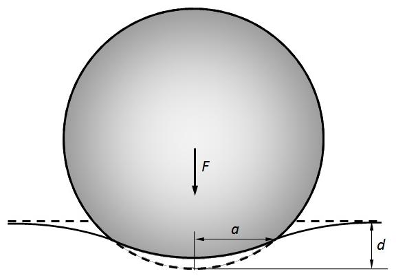
这张图展示了弹性球压在弹性平面上时两者怎样变形。F 是把球往下压的力，上方水平虚线是平面原来的表面，弯下去的粗实线是压下去以后的表面，底部那条水平细线只用来量压深，球底部的虚线弧是球没变形时的轮廓，a 是接触半径，d 是压深。通过对比水平虚线和弯下去的粗实线，以及球底的虚实两条弧线，可以看出球和平面都被压扁了一点，而且接触圈以外的平面也被平滑地带着往下沉。
① 两个软体 = 刚体压软平面
已知：两物体的杨氏模量 \(E_A\)、\(E_B\) 与泊松比 \(\nu_A\)、\(\nu_B\)，两表面离切平面弯出的高度 \(f_A\)、\(f_B\)，压深 \(\delta\)；求：接触面上的压力 \(p\) 满足的方程。
\[\begin{cases}\color{#c0392b}{p_{A\to B}(\mathbf x)=p_{B\to A}(\mathbf x)=p(\mathbf x)} & \color{#c0392b}{(1)}\\[4pt] \color{#c0392b}{u_i(\mathbf x)=\dfrac{1}{E_i'}\cdot\dfrac1\pi\displaystyle\int\frac{p(\mathbf x')}{|\mathbf x-\mathbf x'|}\,d\mathbf x'} & \color{#c0392b}{(2)}\\[4pt] \color{#c0392b}{E_i'=\dfrac{E_i}{1-\nu_i^2}} & \color{#c0392b}{(3)}\\[4pt] \color{#c0392b}{u_A+u_B=\delta-h(\mathbf x),\quad h=f_A+f_B} & \color{#c0392b}{(4)}\end{cases}\ \color{#c0392b}{\Longrightarrow\ \frac{1}{E^*}\cdot\frac1\pi\int\frac{p}{|\mathbf x-\mathbf x'|}=\delta-h,\quad \frac1{E^*}=\frac1{E_A'}+\frac1{E_B'}}\]
式 (1)：作用力等于反作用力，接触面上每一点 A 压 B 和 B 压 A 的压力一样大。
式 (2)：Boussinesq 解，平面受压力时表面下沉；按一张蹦床的一个点，周围一圈都跟着陷下去，离得越近陷得越多，与距离成反比；两侧积分那部分完全一样，区别只在材料系数（Popov、Heß、Willert 2019 手册 §2.2 式 (2.2) 点力解与式 (2.3) 叠加）。
式 (3)：把侧面鼓出也算进去后的有效硬度（同上 §2.2 式 (2.1)）。
式 (4)：贴合条件，不变形时推近 \(\delta\) 后每处会穿进去的量，由两边各自凹下去让出来；缝隙是两边弯出去的高度之和（同上 §2.2 式 (2.4)）。
结果：把 (2)(3) 代入 (4)，两侧的系数合成一个合成模量 \(E^*\)。这个方程和「一个形状为 \(h\) 的刚体，压一块硬度为 \(E^*\) 的平面」完全一样，所以答案只取决于缝隙和合成模量（同上 §2.2 开头）。两侧软度直接相加，就像两根弹簧串起来，总的软度是两根之和；不管哪边软，只要合起来一样软，结果就一样。
 这张图展示了在表面按一个点时周围陷下去多少。红色箭头是压在表面上的点力 F，灰色虚线是表面原来的位置，橙色块的上边缘是压下去以后的表面。通过对比距离 r 处的蓝色箭头「下沉 u」和距离 2r 处的蓝色箭头 u/2，可以看出下沉与距离成反比，远一倍只沉一半，第 5 节里两个接触区互相影响用的就是这条规律。
这张图展示了在表面按一个点时周围陷下去多少。红色箭头是压在表面上的点力 F，灰色虚线是表面原来的位置，橙色块的上边缘是压下去以后的表面。通过对比距离 r 处的蓝色箭头「下沉 u」和距离 2r 处的蓝色箭头 u/2，可以看出下沉与距离成反比，远一倍只沉一半，第 5 节里两个接触区互相影响用的就是这条规律。
 这张图展示了两个软体相碰可以换成一个刚体压一块软平面。左边橙色软体 A 和绿色软体 B 在灰色虚线（两者的公共切面）处相碰，红色箭头 f_A、f_B 是各自表面离切面弯出去的高度，两个软体的软度分别是 1/E_A′ 和 1/E_B′（E′ 是有效硬度）。右边灰色刚体与橙色软平面之间的红色箭头是缝隙 h。通过对比左边的 f_A、f_B 和右边的 h = f_A + f_B，以及左边两个软度和右边蓝字的 1/E* = 1/E_A′ + 1/E_B′，可以看出缝隙相加、软度也相加，E* 就是两边合起来的硬度，所以只要合起来的缝隙和硬度相同，结果就相同。
这张图展示了两个软体相碰可以换成一个刚体压一块软平面。左边橙色软体 A 和绿色软体 B 在灰色虚线（两者的公共切面）处相碰，红色箭头 f_A、f_B 是各自表面离切面弯出去的高度，两个软体的软度分别是 1/E_A′ 和 1/E_B′（E′ 是有效硬度）。右边灰色刚体与橙色软平面之间的红色箭头是缝隙 h。通过对比左边的 f_A、f_B 和右边的 h = f_A + f_B，以及左边两个软度和右边蓝字的 1/E* = 1/E_A′ + 1/E_B′，可以看出缝隙相加、软度也相加，E* 就是两边合起来的硬度，所以只要合起来的缝隙和硬度相同，结果就相同。
推导
第一步，两侧受同一个压力。 作用力等于反作用力，接触面上每一点 A 压 B 和 B 压 A 的压力一样大，记为 \(p(\mathbf x)\)。\(\mathbf x\) 是接触面上的位置，\(p\) 是这一点每单位面积受的力。
第二步，每一侧陷下去多少由压力决定，而且规则一样。 弹性力学的 Boussinesq 解给出，平面受压力 \(p\) 时表面下沉
\[u_i(\mathbf x)=\frac{1}{E_i'}\cdot\frac1\pi\int\frac{p(\mathbf x')}{|\mathbf x-\mathbf x'|}\,d\mathbf x',\qquad E_i'=\frac{E_i}{1-\nu_i^2}.\]
- \(u_i(\mathbf x)\)：物体 \(i\)（A 或 B）在 \(\mathbf x\) 处表面往下陷的距离。
- \(\mathbf x'\)：接触面上另一个位置，积分要把所有位置的压力都加起来。
- \(|\mathbf x-\mathbf x'|\)：两点之间的距离。
- \(E_i\)：杨氏模量，材料有多硬，越大越难压。
- \(\nu_i\)：泊松比，被压时往侧面鼓出多少，在 0 到 0.5 之间。
- \(E_i'\)：把侧面鼓出也算进去后的有效硬度。
直观理解：积分号里是「每一点的压力，除以它到这里的距离」再加起来。按一张蹦床的一个点，周围一圈都跟着陷下去，离得越近陷得越多，按 \(1/\text{距离}\) 递减。前面的 \(1/E_i'\) 表示材料越软，陷得越深。两侧积分那部分完全一样，区别只在材料系数。
第三步，写出贴合条件。
\[u_A+u_B=\delta-h(\mathbf x),\qquad h=f_A+f_B.\]
- \(\delta\)：压深，两个物体远处整体相向推近的距离。
- \(f_A,f_B\)：两个表面各自离切平面弯出去的高度（球面离开最低点越远，弯得越高）。
- \(h\)：接触前两个表面之间的缝隙，等于两边弯出去的高度之和。
直观理解：如果两个物体不变形，推近 \(\delta\) 以后，每一处会穿进去 \(\delta-h\)：原来有 \(h\) 宽的缝，推近了 \(\delta\)，多出来的部分就穿进去了。真实情况下不能穿，两边各自凹下去 \(u_A\)、\(u_B\)，加起来正好把这部分让出来。
第四步，把第二步代进第三步。
\[\Big(\frac1{E_A'}+\frac1{E_B'}\Big)\cdot\frac1\pi\int\frac{p}{|\mathbf x-\mathbf x'|}=\delta-h,\qquad \frac1{E^*}\equiv\frac1{E_A'}+\frac1{E_B'}.\]
这个方程和「一个形状为 \(h\) 的刚体，压一块硬度为 \(E^*\) 的平面」完全一样。所以答案只取决于缝隙 \(h\) 和合成模量 \(E^*\)。
直观理解：\(1/E\) 代表「软的程度」，两侧的软度直接相加，就像两根弹簧串起来，总的软度是两根之和。不管哪边软，只要合起来一样软，结果就一样；形状也只看两边加起来的缝隙。
这个等价关系（Popov、Heß 和 Willert 2019 年的接触力学手册第 2.2 节）只在线弹性、小变形、两侧都近似半空间（表面坡度远小于 1）、无摩擦时成立。球、椭圆、幂律以及任意轴对称的缝隙都能直接用；平底这类带尖边的压头、接触半径相对曲率半径不够小、物体厚度有限、几个接触区互相影响时，都不能直接用，要另外处理。
降维法：三维接触化成一排一维弹簧
① 一排一维弹簧给出力与能量
已知：轴对称缝隙 \(h(r)\)、合成模量 \(E^*\)、压深 \(d\)；求：接触半径 \(a\)、总力 \(F\)、总能量 \(U_0\)。
\[\begin{cases}\color{#c0392b}{g(x)=|x|\displaystyle\int_0^{|x|}\frac{h'(r)}{\sqrt{x^2-r^2}}\,dr} & \color{#c0392b}{(1)}\\[4pt] \color{#c0392b}{\Delta k=E^*\,\Delta x} & \color{#c0392b}{(2)}\\[4pt] \color{#c0392b}{w(x)=d-g(x)} & \color{#c0392b}{(3)}\\[4pt] \color{#c0392b}{g(a)=d} & \color{#c0392b}{(4)}\\[4pt] \color{#c0392b}{U_{\text{弹簧}}=\tfrac12\,\Delta k\,w^2} & \color{#c0392b}{(5)}\end{cases}\ \color{#c0392b}{\Longrightarrow\ F=E^*\int_{-a}^{a}\big(d-g(x)\big)dx,\quad U_0=\frac{E^*}{2}\int_{-a}^{a}\big(d-g(x)\big)^2dx}\]
式 (1)：等效轮廓，把三维缝隙形状「变换」成一排弹簧离开平面的高度；三维里各点互相牵连的效果已经被这个变换吸收，弹簧之间互不影响（Popov、Heß、Willert 2019 手册 §2.3.1 式 (2.6)）。
式 (2)：每根弹簧的刚度，越宽越硬，材料越硬越硬（同上 §2.3.1 式 (2.5)）。
式 (3)：第 \(x\) 根弹簧的压缩量 = 压深减去它的高度（同上 §2.3.2 式 (2.8)）。
式 (4)：接触边缘处压缩量为 0，由此定出接触半径（同上 §2.3.2 式 (2.9)）。
式 (5)：每根弹簧的能量是 ½ × 刚度 × 压缩量的平方。
结果：所有弹簧的力相加得总力（同上 §2.3.2 式 (2.11)），能量相加得总能量，与原来的三维问题完全相同。压得越深 → 接触越宽、每根压得越多，力和能量都越大。
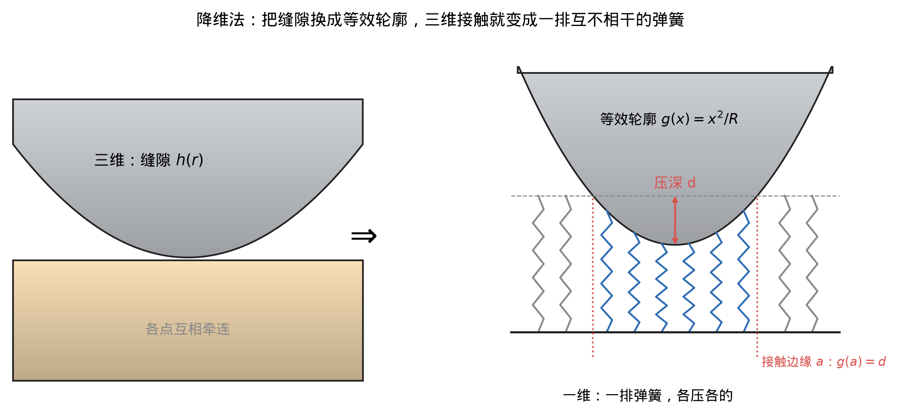
这张图展示了降维法怎样把三维接触换成一排一维弹簧。左边灰色刚体压橙色平面，两者之间的缝隙是 h(r)，平面里各点的变形互相牵连。右边把缝隙换成灰色的等效轮廓 g(x) = x²/R（R 是球的半径），压进一排弹簧，灰色虚线是弹簧没压时的顶端，红色箭头是压深 d。通过对比两条红色点线之间被压短的蓝色弹簧和点线外不受力的灰色弹簧，可以看出红色点线的位置就是接触边缘 a，满足 g(a) = d。每根弹簧只管自己那一格，所以三维里各点互相牵连的问题变成了一维的逐根相加。
 这张图是降维法原作者的示意图。左边是半径 R 的灰色球在力 F 下压进弹性平面，a 是接触半径，d 是压深；箭头右边是换成的一维模型，一个半径 R1 的灰色轮廓在同样的力 F 下压进一排竖直弹簧，R1 = R/2，也就是等效轮廓 g(x) = x²/R。通过对比左右两边标出的 a 和 d，可以看出换成一排各压各的弹簧后，力、接触半径、压深都与三维问题相同，所以能用一维弹簧算三维接触。
这张图是降维法原作者的示意图。左边是半径 R 的灰色球在力 F 下压进弹性平面，a 是接触半径，d 是压深；箭头右边是换成的一维模型，一个半径 R1 的灰色轮廓在同样的力 F 下压进一排竖直弹簧，R1 = R/2，也就是等效轮廓 g(x) = x²/R。通过对比左右两边标出的 a 和 d，可以看出换成一排各压各的弹簧后，力、接触半径、压深都与三维问题相同，所以能用一维弹簧算三维接触。
② 力是能量的导数，越压越硬
已知：① 的总力与总能量；求：能量对压深、力对压深的变化率。
\[\begin{cases}\color{#c0392b}{U_0=\dfrac{E^*}{2}\displaystyle\int_{-a}^{a}\big(d-g\big)^2dx} & \color{#c0392b}{(1)}\\[4pt] \color{#c0392b}{F=E^*\displaystyle\int_{-a}^{a}\big(d-g\big)dx} & \color{#c0392b}{(2)}\\[4pt] \color{#c0392b}{d-g(\pm a)=0} & \color{#c0392b}{(3)}\end{cases}\ \color{#c0392b}{\Longrightarrow\ \frac{dU_0}{dd}=F,\quad \frac{dF}{dd}=2aE^*}\]
式 (1)(2)：① 的结果。
式 (3)：① 式 (4)，被积函数在积分上下限处为 0。
结果：对压深求导，由 (3) 边界上的项消失。前者说明力就是能量对压深的导数；后者说明压得越深越硬，因为接触区越来越宽，参与受力的弹簧越来越多。
推导
Popov 的降维法证明，轴对称的接触可以精确换成一排互不相干的一维弹簧，压在一条等效轮廓上：
\[g(x)=|x|\int_0^{|x|}\frac{h'(r)}{\sqrt{x^2-r^2}}\,dr.\]
- \(x\)：这排弹簧所在直线上的坐标，原点在接触中心。
- \(r\)：离接触中心的径向距离。
- \(h'(r)\)：缝隙随 \(r\) 变化的斜率。
- \(g(x)\)：等效轮廓，第 \(x\) 根弹簧离开平面的高度。
直观理解：三维接触里各点互相牵连，不好算。降维法先把缝隙形状「变换」一下，变成 \(g(x)\)，然后这排一维弹簧就可以各压各的、互不影响，算出的力和能量与原来的三维问题完全相同。牵连的效果已经被这个变换吸收了。
每根弹簧宽 \(\Delta x\)、刚度 \(E^*\Delta x\)（越宽越硬，材料越硬越硬）。压深为 \(d\) 时，第 \(x\) 根被压缩 \(d-g(x)\)。压缩量为 0 的地方就是接触边缘，记为 \(a\)，满足 \(g(a)=d\)。总力和总能量是所有弹簧加起来：
\[F=E^*\int_{-a}^{a}\big(d-g(x)\big)dx,\qquad U_0=\frac{E^*}{2}\int_{-a}^{a}\big(d-g(x)\big)^2dx.\]
- \(d\)：压深（和上面的 \(\delta\) 是同一个量）。
- \(a\)：接触半径，接触区有多大。
- \(F\)：总接触力。
- \(U_0\)：总能量，每根弹簧的能量是 \(\tfrac12\times\)刚度\(\times\)压缩量\(^2\)。
两个推论：对 \(d\) 求导，被积函数在 \(\pm a\) 处正好为 0，边界上的项消失，得到 \(dU_0/dd=F\) 和 \(dF/dd=2aE^*\)。前者说明力就是能量对压深的导数；后者说明压得越深越硬，因为接触区 \(a\) 越来越宽，参与受力的弹簧越来越多。
用它推出 Hertz
① 球：Hertz 解
已知：两球半径 \(R_A\)、\(R_B\)，合成模量 \(E^*\)，压深 \(d\)；求：接触半径 \(a\)、力 \(F\)、能量 \(U_H\)。
\[\begin{cases}\color{#c0392b}{h=\dfrac{r^2}{2R},\quad \dfrac1R=\dfrac1{R_A}+\dfrac1{R_B}} & \color{#c0392b}{(1)}\\[4pt] \color{#c0392b}{g(x)=|x|\displaystyle\int_0^{|x|}\frac{h'(r)}{\sqrt{x^2-r^2}}\,dr} & \color{#c0392b}{(2)}\\[4pt] \color{#c0392b}{g(a)=d,\quad F=E^*\displaystyle\int_{-a}^{a}\big(d-g\big)dx,\quad \frac{dU}{dd}=F} & \color{#c0392b}{(3)}\end{cases}\ \color{#c0392b}{\Longrightarrow\ g=\frac{x^2}{R},\ a^2=Rd,\ F=\frac43E^*\sqrt R\,d^{3/2},\ U_H=\frac{8}{15}E^*\sqrt R\,d^{5/2}}\]
式 (1)：球在接触处的缝隙是抛物线，两边曲率相加，道理和软度相加一样（Popov、Heß、Willert 2019 手册 §2.5.3 式 (2.28)）。
式 (2)：降维法的等效轮廓（上一节 ① 式 (1)）。
式 (3)：降维法的接触边缘条件、总力，以及力是能量的导数（上一节 ①②）。
结果：把 (1) 代入 (2) 得等效轮廓，由边缘条件得接触半径，代入总力，再对压深积分得能量（等效轮廓、接触半径与力同手册 §2.5.3 式 (2.29)）。压得越深 → 接触圈越大但只按平方根变大；能量按压深的 2.5 次方涨，因为每处压得更深，接触圈又同时变宽，两件事叠在一起；大球接触圈更宽，所以更「硬」，但只按开方变化。
② 幂律形状
已知：缝隙按半径的 \(n\) 次方变化，\(c\) 是系数；求：能量随压深的幂次。
\[\begin{cases}\color{#c0392b}{h=c\,r^n} & \color{#c0392b}{(1)}\\[4pt] \color{#c0392b}{g\propto|x|^n,\quad d\propto a^n} & \color{#c0392b}{(2)}\\[4pt] \color{#c0392b}{U_0\propto d^2a} & \color{#c0392b}{(3)}\end{cases}\ \color{#c0392b}{\Longrightarrow\ U_0\propto d^{(2n+1)/n}}\]
式 (1)：幂律缝隙，\(n\) 越大越平、越小越尖。
式 (2)：代入等效轮廓与边缘条件（上一节 ① 式 (1)(4)）。
式 (3)：上一节 ① 的能量积分，被积函数量级为压深的平方、积分宽度为接触半径。
结果：由 (2) 把接触半径换成压深。球（\(n=2\)）是 2.5 次方，圆锥（\(n=1\)）是 3 次方，平底（\(n\to\infty\)）是 2 次方。压头越尖 → 能量随压深涨得越快，因为接触面积随压深涨得越快。
 这张图展示了压头形状怎样决定能量随压深涨得多快。横轴是压深，纵轴是能量，都取对数，所以每条线的斜率就是能量随压深的幂次，右边的小图标画的是对应的压头形状。通过对比红色圆锥线、蓝色球线、绿色平底线的倾斜程度，可以看出圆锥最陡（斜率 3），球居中（2.5），平底最缓（2），因为压头越尖，压深加大时接触面积涨得越快，能量也涨得越快。三条线的高低没有意义，只比斜率。
这张图展示了压头形状怎样决定能量随压深涨得多快。横轴是压深，纵轴是能量，都取对数，所以每条线的斜率就是能量随压深的幂次，右边的小图标画的是对应的压头形状。通过对比红色圆锥线、蓝色球线、绿色平底线的倾斜程度，可以看出圆锥最陡（斜率 3），球居中（2.5），平底最缓（2），因为压头越尖，压深加大时接触面积涨得越快，能量也涨得越快。三条线的高低没有意义，只比斜率。
推导
球的缝隙是 \(h=r^2/(2R)\)，\(R\) 是合成半径，\(1/R=1/R_A+1/R_B\)（两边曲率相加，道理和软度相加一样）。代入等效轮廓，\(h'(r)=r/R\)：
\[g(x)=|x|\int_0^{|x|}\frac{r/R}{\sqrt{x^2-r^2}}dr=\frac{|x|}{R}\Big[-\sqrt{x^2-r^2}\Big]_0^{|x|}=\frac{x^2}{R}.\]
由 \(g(a)=d\) 得 \(a^2=Rd\)：压得越深，接触圈越大，但只按平方根变大。代入力的公式：
\[F=E^*\Big(2ad-\frac{2a^3}{3R}\Big)=\frac43E^*\sqrt R\,d^{3/2}.\]
对 \(d\) 积分得能量：
\[U_H=\frac{8}{15}E^*\sqrt R\,d^{5/2}.\]
直观理解：能量按压深的 2.5 次方涨，因为压深加大时，每处压得更深，接触圈又同时变宽，两件事叠在一起。能量和 \(\sqrt R\) 成正比：大球接触圈更宽，所以更「硬」，但只按开方变化。
换成别的形状，缝隙 \(h=c\,r^n\)（\(c\) 是系数，\(n\) 越大越平、越小越尖），则 \(g\propto|x|^n\)，\(d\propto a^n\)，能量 \(U_0\propto d^2a\propto d^{(2n+1)/n}\)。球（\(n=2\)）是 2.5 次方，圆锥（\(n=1\)）是 3 次方，平底（\(n\to\infty\)）是 2 次方。直观上，压头越尖，接触面积随压深涨得越快，能量也涨得越快。
标签对不对
和解析解比
| 压头 |
标签 ÷ 解析解 |
| 平底圆柱 |
1.001–1.005 |
| 圆锥 |
1.004–1.011 |
| \(y=c\,r^{1.5}\) |
0.994–1.006 |
| 薄层 |
1.002–1.007 |
比值越接近 1，标签越准。能量随压深的幂次（圆锥、\(y=c\,r^{1.5}\)、\(y=c\,r^{4}\)），标签给出 2.975 / 2.652 / 2.260，解析解是 3 / 2.667 / 2.25。
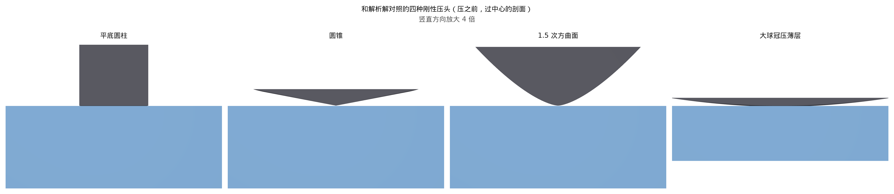
这张图是 3.1 节四组实验压之前的样子，画的是过压头中心的剖面，竖直方向放大 4 倍，灰色是刚性压头，蓝色是软块。从左到右是平底圆柱、圆锥、轮廓高度随半径的 1.5 次方增长的曲面、半径 22.5 的大球冠，最右边那块软块只有 0.1 厚，底面粘在不动的底座上，所以下边缘在画面里能看到。下一张图是同样四组压到最深时的样子。
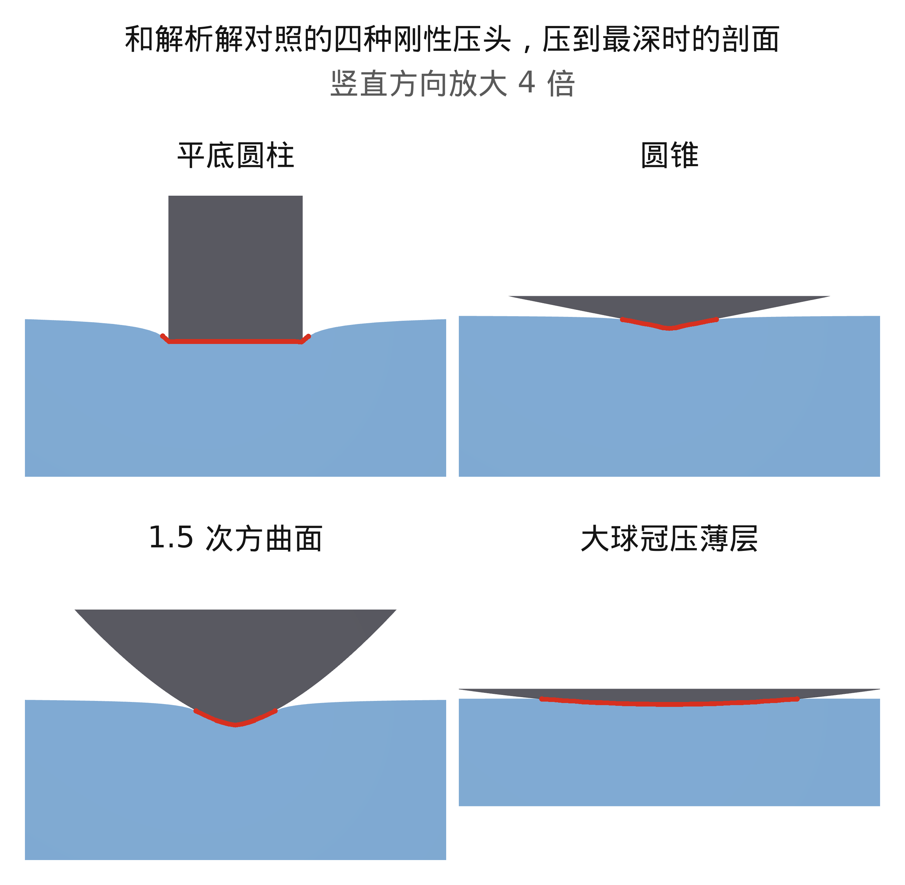
这张图是 3.1 节和解析解对照的四组实验，每组都是一个灰色刚性压头压进一块蓝色软块（杨氏模量 1e5），画的是压到最深时过压头中心的剖面，竖直方向放大 4 倍。左上、右上、左下、右下依次是：半径 0.25 的平底圆柱压下 0.024；圆锥压下 0.012；轮廓高度随半径的 1.5 次方增长的曲面压下 0.024；半径 22.5 的大球冠压在只有 0.1 厚、底面粘牢的薄层上，压下 0.005。这四种形状的接触都有精确的解析解，表里的「标签 ÷ 解析解」就是拿这四组仿真算出的能量去除对应的解析能量。四幅剖面上描红的一段是 IPC 实际施加了接触力的块节点（压头的点落在块的三角形上时力分到三角形三个角，两条棱靠近时分到块那条棱的两端，所以红段比真正贴住的地方长出约一个网格单元），最深一档整面受力节点依次 399、161、137、1193 个。圆锥和 1.5 次方曲面这种尖的压头，主要是压头的点碰块的面，只量块上的点会漏掉，所以要两个方向都算。
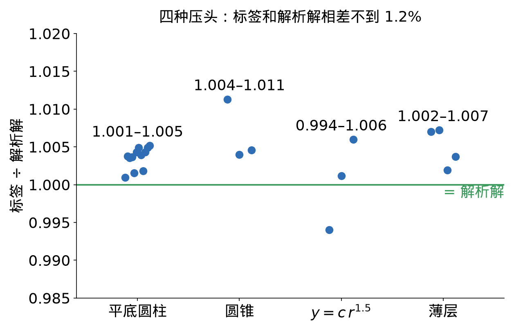
这张图展示了四种压头上标签和解析解相差不到 1.2%。四列蓝点各是一种压头，每个点是一个压深或一个压头尺寸下的「标签 ÷ 解析解」，列上方的数字是这一列的最小到最大值，绿色实线是比值 1；蓝点都贴着绿线，往下最多偏 0.6%，往上最远的是圆锥的 1.011，所以这四种形状上的标签可信。
 这张图展示了标签能量随压深增长的幂次和解析解一致。图用双对数坐标，幂函数在这种坐标里是直线，斜率就是幂次；三条实线是三种压头的标签能量，都除以各自第一个压深的能量、从 1 出发，同色虚线是解析解的斜率，两者重合，右侧标出的拟合幂次 2.97、2.65、2.26 与解析的 3、2.67、2.25 相差不到 1%，所以「压头越尖、能量随压深涨得越快」这个规律标签也给对了。
这张图展示了标签能量随压深增长的幂次和解析解一致。图用双对数坐标，幂函数在这种坐标里是直线，斜率就是幂次；三条实线是三种压头的标签能量，都除以各自第一个压深的能量、从 1 出发，同色虚线是解析解的斜率，两者重合，右侧标出的拟合幂次 2.97、2.65、2.26 与解析的 3、2.67、2.25 相差不到 1%，所以「压头越尖、能量随压深涨得越快」这个规律标签也给对了。
同样这三种幂律压头，按球调好参数的 hydro 最大误差依次是 26%、35%、68%：它的能量只看重叠了多少，压头形状一变，能量随压深的幂次就对不上，越偏离球误差越大。
两个相同软球同时放大一倍
两球半径都是 \(R\)，合成半径 \(R_{\text{合}}\) 满足 \(1/R_{\text{合}}=1/R+1/R\)，即 \(R_{\text{合}}=R/2\)。两球同时放大一倍，\(R_{\text{合}}\) 也翻倍，材料不变所以 \(E^*\) 不变。由 \(U_H\propto\sqrt{R_{\text{合}}}\)，同一压深下能量变成 \(\sqrt2\approx1.414\) 倍。标签给出 1.411–1.438。
 这张图是 3.2 节实验压之前过中心的剖面，两幅用同一个比例尺、按真实比例画。上面橙色和下面蓝色是两个一模一样的软物体（杨氏模量都是 1e5），各自朝对方的那一面是一块球冠，两个球冠顶点对顶点。左边两个球冠的半径都是 1，右边都是 2，所以右边的球冠更平；两块物体本身的大小、球冠底面的宽度都没变，变的只有球冠的弯曲半径。
这张图是 3.2 节实验压之前过中心的剖面，两幅用同一个比例尺、按真实比例画。上面橙色和下面蓝色是两个一模一样的软物体（杨氏模量都是 1e5），各自朝对方的那一面是一块球冠，两个球冠顶点对顶点。左边两个球冠的半径都是 1，右边都是 2，所以右边的球冠更平；两块物体本身的大小、球冠底面的宽度都没变，变的只有球冠的弯曲半径。
 这张图是上一张两组物体对压到 0.024 时的剖面，竖直方向放大 4 倍，两幅比例尺相同。橙色和蓝色两个球冠在中间被互相压平成一条直线，两边压下去的量一样多，因为两个物体完全相同；右边球冠半径大一倍，压平的那一段明显更宽，存的弹性能是左边的 1.438 倍（这是未外推的单次读数），接近 Hertz 给出的 √2 ≈ 1.414 倍。
这张图是上一张两组物体对压到 0.024 时的剖面，竖直方向放大 4 倍，两幅比例尺相同。橙色和蓝色两个球冠在中间被互相压平成一条直线，两边压下去的量一样多，因为两个物体完全相同；右边球冠半径大一倍，压平的那一段明显更宽，存的弹性能是左边的 1.438 倍（这是未外推的单次读数），接近 Hertz 给出的 √2 ≈ 1.414 倍。
 这张图展示了两个相同的软球同时放大一倍后，同一压深下的能量变成 √2 倍。两球材料都是 E = 1e5、ν = 0.3，半径从 1 放大到 2；蓝线是每个压深上「大球那对 ÷ 小球那对」的标签能量比，浅蓝带是网格外推带来的不确定范围，红色虚线是理论值 √2 = 1.414；蓝带贴着红线，范围 1.411 到 1.438，所以标签对尺寸放大的响应和理论一致。
这张图展示了两个相同的软球同时放大一倍后，同一压深下的能量变成 √2 倍。两球材料都是 E = 1e5、ν = 0.3，半径从 1 放大到 2；蓝线是每个压深上「大球那对 ÷ 小球那对」的标签能量比，浅蓝带是网格外推带来的不确定范围，红色虚线是理论值 √2 = 1.414；蓝带贴着红线，范围 1.411 到 1.438，所以标签对尺寸放大的响应和理论一致。
hydro 在这件事上只能给 1 倍或 2 倍。它的力等于压力梯度乘重叠体积；球放大一倍，重叠体积翻倍。压力场按半径归一时梯度跟着减半，两者抵消，得 1 倍；按厚度归一时梯度不变，得 2 倍。弹性真解的 \(\sqrt2\) 它给不出来。
软压头为什么比 Hertz 低
| 压头 / 块的杨氏模量 |
标签 ÷ Hertz |
| 1e8 / 1e5（压头几乎刚） |
0.999–1.007 |
| 1e6 / 1e5 |
0.996–1.003 |
| 1e5 / 1e5（一样软） |
0.986–0.988 |
| 1e5 / 1e6（软压头压硬块） |
0.973–0.980 |
2.1 节用了两个假设：变形很小；接触半径 \(a\) 远小于球半径 \(R\)。压头硬时，凹下去的是本来就平的块，两个假设都成立。压头软时，凹下去的是弯的球，\(a/R\) 又不够小，两个假设都偏了。另写的一个轴对称有限元程序（不用 IPC，不共用代码）和标签只差 0.15 个百分点，所以偏的是公式，不是标签。
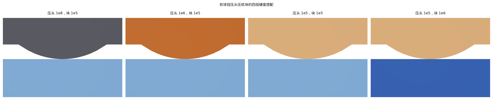
这张图展示了 3.3 节四组实验压之前的样子，四组的形状完全一样，只换了压头和块各自有多硬。每一幅都是过中心的剖面，上面是底部为半径 1 球冠的压头，下面是块，每幅上方写着压头和块的杨氏模量，颜色越深表示越硬：深灰的压头是 1e8，几乎是刚体，深橙是 1e6，浅橙是 1e5；浅蓝的块是 1e5，深蓝的块是 1e6。通过对比从左到右四幅里压头和块的颜色可以看出，前三组块一样软、压头一组比一组软，最右边一组把软硬对调，变成软压头压硬块，这正对应 3.3 节表里的四行。
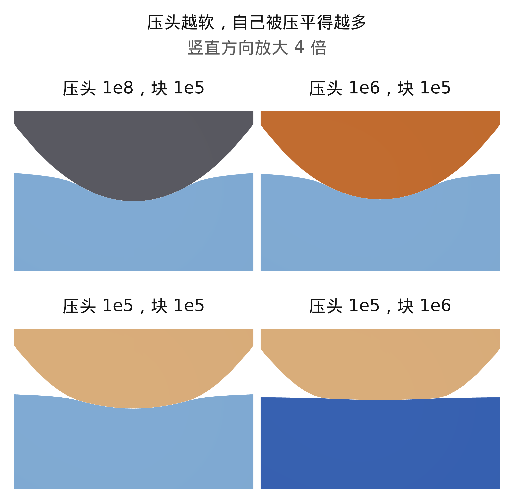
这张图展示了压头越软，它自己被压平得越多。四幅是上一张同样四组压到最深时过中心的剖面，竖直方向放大了 4 倍才看得清，每幅上方仍是压头和块的杨氏模量。通过对比四幅里压头底部的形状可以看出，左上深灰的近刚压头底部还是完整的圆弧，坑全压在浅蓝块上，它只分到 0.1% 的能量；右上、左下压头依次变软，底部越来越平，压头分到的能量依次是 9%、51%；右下浅橙压头压深蓝硬块，几乎是压头自己被压平，分到 91% 的能量。四幅里描红的是 IPC 实际施加了接触力的块节点（力分到块三角形的角或棱的两端，所以红段比真正贴住的地方长出约一个网格单元），最深一档整面受力节点依次 167、167、166、137 个。3.3 节说的就是这件事：压头一软，凹下去的变成了本来就弯的球冠，Hertz 的「小变形、接触区远小于球」两个假设就不再那么成立，所以标签比 Hertz 低一些。
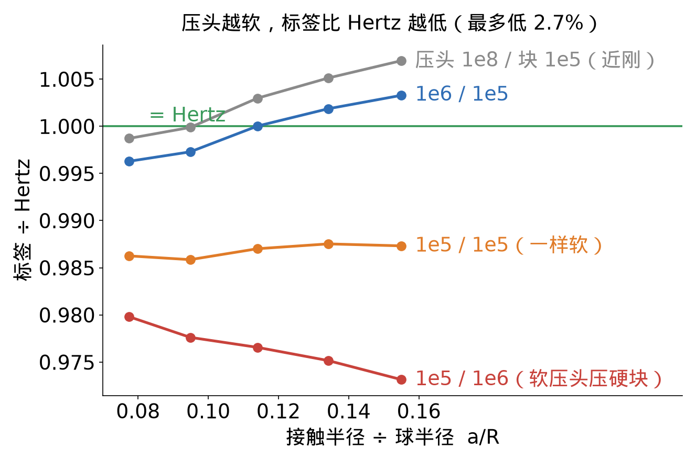
这张图展示了压头越软，标签比 Hertz 低得越多，最多低 2.7%。四组都是半径 1 的球冠压头压平块，标签是两体弹性能之和除以两体 Hertz 能量，区别只在压头和块的杨氏模量：灰线压头 1e8、块 1e5（压头近刚），蓝线 1e6 / 1e5，橙线 1e5 / 1e5（一样软），红线 1e5 / 1e6（软压头压硬块）。灰线和蓝线都在绿色 Hertz 线上下 0.7% 以内；橙线整体低约 1.3%，红线最低，到 0.973，并且越往右越低。横轴越往右，接触区相对球越大，红线的走势说明偏差来自 Hertz 的「小变形、接触区远小于球」两个假设在软压头上不再成立。
偏低多少有规律：压头这一侧承担的软度份额越大，接触圈相对球越宽，偏得越多。软度份额是压头的 \(1/E'\) 占两侧 \(1/E'\) 之和的比例，硬 10 倍的压头是 0.09，一样软是 0.5，软压头压硬块是 0.91。块换成刚性的也一样偏低：独立有限元算软球冠压刚性平面，块推到无限大时比 Hertz 低 1.6% 到 3.6%，其中约 62% 到 74% 来自有限变形；刚球压平块只差 0.2% 以内。
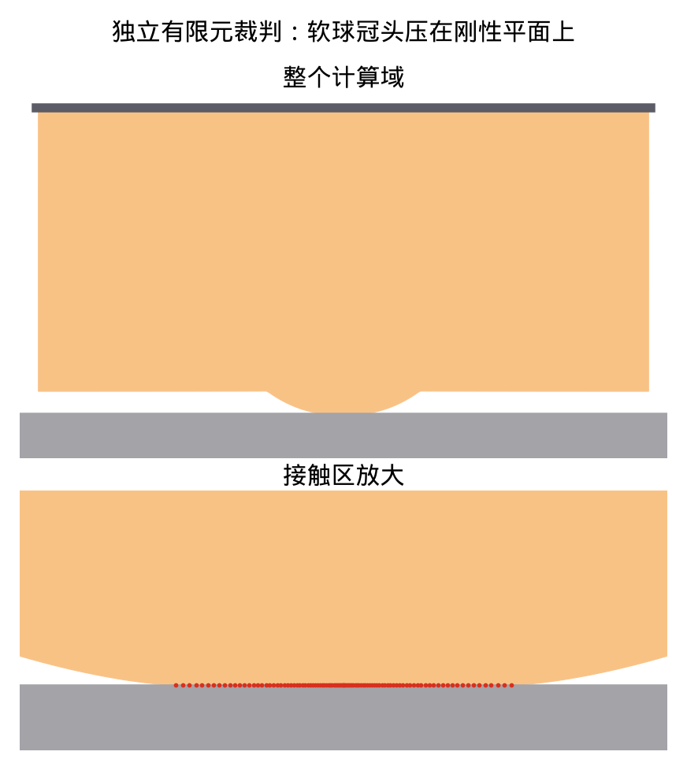
这张图展示独立有限元裁判算的情形：一个带球冠头的软圆柱（半径 = 高 = 2.4，球冠半径 R = 1、水平半径 0.6，E = 1e5），顶面固定（深灰条），被下面的刚性平面（灰）往上压到最深一档 0.024 后的形状。裁判是轴对称计算，只算半个剖面，这里关于中轴镜像成整个剖面，没有放大。上幅是整个计算域，能看出变形只集中在球冠底部，圆柱其余部分几乎不动；下幅放大接触区，红点是裁判自己判为接触的表面节点（到平面的间隙大于 −1e-7），接触区半径约 0.155，和 Hertz 的 √(Rδ) = 0.155 一致，这一档的弹性能是 Hertz 的 1.007 倍。
验收方法据此定为：先除以同网格下近刚压头的结果，让两者共有的数值误差相互抵消；再把比值对 \(a/R\) 画一条直线，延长到 \(a/R=0\)。在这个极限下，接触区相对球无限小，Hertz 的假设严格成立。延长线在 \(a/R=0\) 处的值（截距）和 1 相差不超过 1%，就算通过。四组都通过。
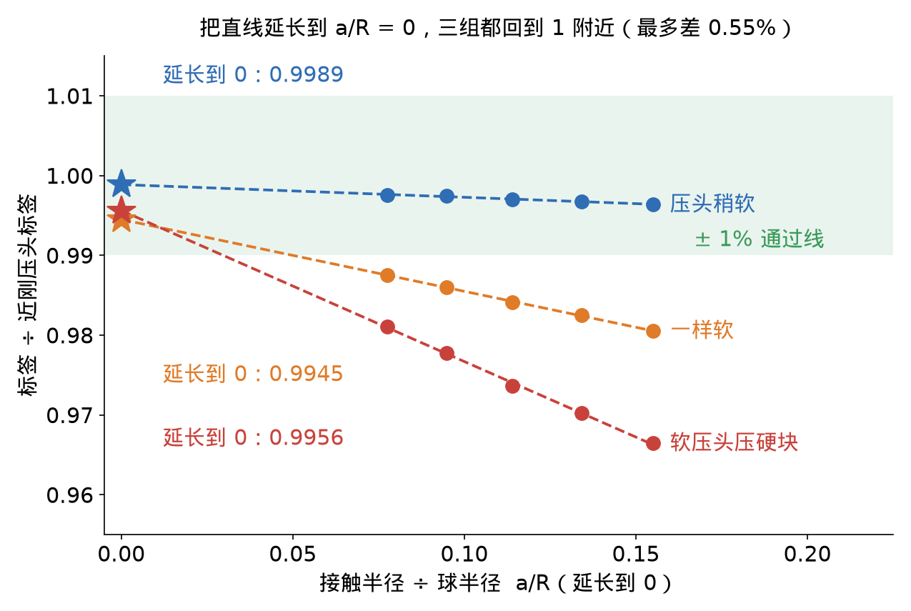
这张图展示了软压头带来的偏差在接触区趋于无限小时消失，三组都回到 1 附近，最多差 0.55%。3.3 节的四组里，压头几乎刚性的那组（1e8 / 1e5）当分母，其余三组都除以它，所以图上只有三条线。蓝、橙、红三组依次是压头稍软、一样软、软压头压硬块（压头和块的模量同上面那张「标签 ÷ Hertz」曲线图），圆点是各压深下「软压头标签 ÷ 近刚压头标签」，最右端低 0.4% 到 3.4%；虚线是对圆点拟合的直线，延长到 Hertz 假设严格成立的 a/R = 0，三颗星落在 0.9989、0.9945、0.9956，都在浅绿色 ±1% 带里，所以按事先定的判据三组都通过。
网格外推
① 外推值（Richardson 外推）
已知：单元尺寸为 \(h\)、\(h/2\)、\(h/4\) 三档网格算出的 \(U_1\)、\(U_2\)、\(U_3\)，收敛阶 \(p\)；求：网格无限细时的值 \(U_\infty\)，也就是我们要的标签。
\[\begin{cases}\color{#c0392b}{U(h)=U_\infty+C\,h^p} & \color{#c0392b}{(1)}\\[4pt] \color{#c0392b}{U_2=U_\infty+C\,(h/2)^p} & \color{#c0392b}{(2)}\\[4pt] \color{#c0392b}{U_3=U_\infty+C\,(h/4)^p} & \color{#c0392b}{(3)}\end{cases}\ \color{#c0392b}{\Longrightarrow\ U_\infty=U_3+\frac{U_3-U_2}{2^p-1}}\]
式 (1)：误差模型，用尺寸 \(h\) 的单元算出的值等于真值加一项误差（这里的 \(h\) 指单元尺寸，不是缝隙）。单元越小 → 误差越小，因为离散越细越接近连续问题；\(p\) 越大 → 误差缩得越快，网格每细一半，误差缩成原来的 \(2^p\) 分之一。
式 (2)(3)：中、细两档的读数，真值相同，中档的误差是细档的 \(2^p\) 倍。
结果：(2)(3) 相减消去未知的 \(C\)，再代回 (3)。从细档读数出发，再顺着「中 → 细」的方向多走一步就到真值；两档差得越多 → 细档离真值越远，要多走越多。
② 收敛阶 \(p\)
已知：三档读数 \(U_1\)、\(U_2\)、\(U_3\)，相邻两档尺寸比 2；求：收敛阶 \(p\)。
\[\begin{cases}\color{#c0392b}{U_1-U_2=C\,(h/2)^p\,(2^p-1)} & \color{#c0392b}{(1)}\\[4pt] \color{#c0392b}{U_2-U_3=C\,(h/4)^p\,(2^p-1)} & \color{#c0392b}{(2)}\end{cases}\ \color{#c0392b}{\Longrightarrow\ p=\log_2\frac{U_1-U_2}{U_2-U_3}}\]
式 (1)(2)：① 式 (1) 用在粗–中、中–细相邻两档上，每对之差只剩误差之差。
结果：(1) 除以 (2) 得两档差之比为 \(2^p\)，取以 2 为底的对数。看相邻两档之间的变化每加细一次缩小多少倍，就知道误差按几次方收敛。\(p\) 是两个很小的差相除得到的，分子分母稍有噪声就乱跳，所以同一组实验所有压深共用一个 \(p\)（取各压深的中位数）。
推导
有限元把物体切成小单元，单元越小越准。用三档网格算三次，单元尺寸为 \(h,\ h/2,\ h/4\)（这里的 \(h\) 指单元尺寸，不是缝隙），得到 \(U_1,U_2,U_3\)。设误差按 \(Ch^p\) 缩小（\(C\) 是常数，\(p\) 叫收敛阶：网格每细一半，误差缩成 \(1/2^p\)），可以解出
\[p=\log_2\frac{U_1-U_2}{U_2-U_3},\qquad U_\infty=U_3+\frac{U_3-U_2}{2^p-1}.\]
- \(U_\infty\)：推到网格无限细时的值，也就是我们要的标签。
直观理解：看相邻两档之间的变化，每加细一次变化缩小多少倍，就知道误差在以什么速度收敛，从而推出极限。问题在于 \(p\) 是两个很小的差相除得到的，分子分母稍有噪声，\(p\) 就乱跳。原来每个压深各算一个 \(p\)，在 0.88 到 1.45 之间跳，给标签带进了约 0.5% 的假起伏。现在改成同一组实验所有压深共用一个 \(p\)（取各压深的中位数），标签就平稳了。
 这张图展示了网格外推的做法。横轴是有限元单元的尺寸，纵轴是算出的能量，三个黑点是单元尺寸为 h、h/2、h/4 时的结果。通过对比三个黑点和沿灰色虚线延伸到横轴 0 处的蓝色五角星，可以看出网格每细一半，算出的能量下降一截，降幅越来越小，所以顺着这个趋势能推出单元无限小时的值，标签用的就是这个值。
这张图展示了网格外推的做法。横轴是有限元单元的尺寸，纵轴是算出的能量，三个黑点是单元尺寸为 h、h/2、h/4 时的结果。通过对比三个黑点和沿灰色虚线延伸到横轴 0 处的蓝色五角星，可以看出网格每细一半，算出的能量下降一截，降幅越来越小，所以顺着这个趋势能推出单元无限小时的值，标签用的就是这个值。
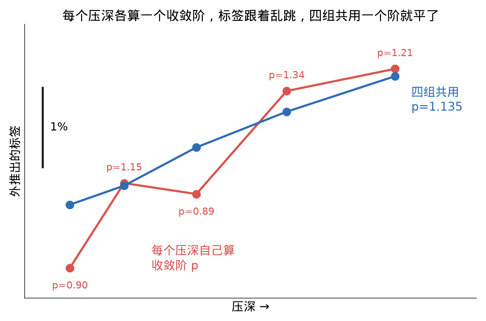
这张图展示了收敛阶 p 的取法怎样影响标签。收敛阶 p 表示网格每细一半误差缩小多少，横轴是压深，纵轴是外推出的标签，这里画的是四组实验中压头几乎刚性的那一组的 5 个压深。红色折线是每个压深用自己算的 p 外推，各点旁标着它的 p（0.90、1.15、0.89、1.34、1.21），蓝色折线是四组共用 p = 1.135，这个数是全部四组 20 个压深各自阶的中位数。通过对比红线的上下锯齿和蓝线的平滑上升，再用左边 1% 的黑色比例尺量，可以看出 p 一跳，标签就跟着跳，这一组的跳动幅度接近 1%，四组共用一个 p 以后这种假起伏消失了。
 这张图是 3.4 节那张标签表对应的那次仿真压到最深一档时的样子。左边是过接触中心的剖面，灰色是半径 1 的刚球，蓝色是软块（杨氏模量 1e5），竖直方向放大 4 倍；右边是从正上方看块的顶面，灰点是块表面的网格点，红点是离球面不到 0.0005 的点，粉色是红点围出的接触区。这一档设定压深 0.024，块实际被压下 0.0232，存下的弹性能 5.06，就是表里最后一行。
这张图是 3.4 节那张标签表对应的那次仿真压到最深一档时的样子。左边是过接触中心的剖面，灰色是半径 1 的刚球，蓝色是软块（杨氏模量 1e5），竖直方向放大 4 倍；右边是从正上方看块的顶面，灰点是块表面的网格点，红点是离球面不到 0.0005 的点，粉色是红点围出的接触区。这一档设定压深 0.024，块实际被压下 0.0232，存下的弹性能 5.06，就是表里最后一行。
 这张图展示了一次仿真运行存下来的原始数据。这次运行是半径 1 的刚球压软块（E = 1e5、ν = 0.3），间隙 0.000125，设定压深从 0.004 到 0.024 共 6 档，每档记一行，依次是设定压深、块表面实际被压下的深度、块的弹性能，以及弹性能除以同一实际压深下的 Hertz 能量。最后一列的 1.05 到 1.12 还带着数值误差，要经过下面那张图里的三步外推才成为训练用的标签，0.009 那一行的 1.0659 就是下面那张图的第三个灰点。这组仿真的场景见 8.1 节的视频，视频是同样的球和块用较粗网格另跑的一次。
这张图展示了一次仿真运行存下来的原始数据。这次运行是半径 1 的刚球压软块（E = 1e5、ν = 0.3），间隙 0.000125，设定压深从 0.004 到 0.024 共 6 档，每档记一行，依次是设定压深、块表面实际被压下的深度、块的弹性能，以及弹性能除以同一实际压深下的 Hertz 能量。最后一列的 1.05 到 1.12 还带着数值误差，要经过下面那张图里的三步外推才成为训练用的标签，0.009 那一行的 1.0659 就是下面那张图的第三个灰点。这组仿真的场景见 8.1 节的视频，视频是同样的球和块用较粗网格另跑的一次。
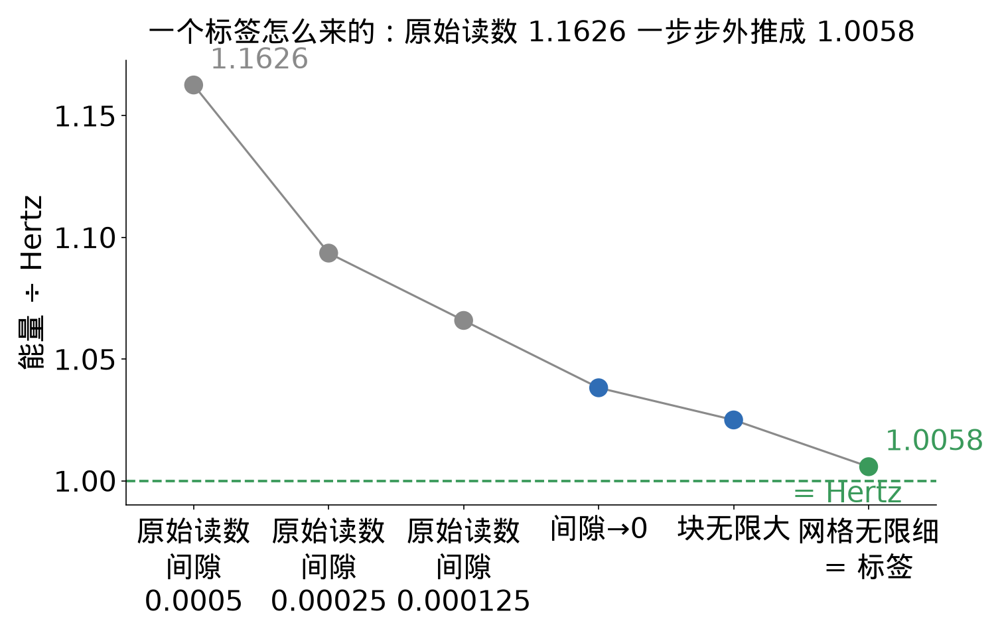
这张图展示了一个标签如何从仿真原始读数逐步外推出来，例子是半径 1 的刚球压软块（E = 1e5、ν = 0.3）、设定压深 0.009。纵轴是能量除以 Hertz 能量，绿色虚线是 1；左边三个灰点是同一网格下间隙取 0.0005、0.00025、0.000125 三档的原始读数，间隙越小读数越低，最大的是最左边的 1.1626；把间隙外推到 0、再把块外推到无限大（仿真里的块有限大，解析解假设块无限大），得到两个蓝点，最后把网格外推到无限细，得到最右边的绿点 1.0058，即最终标签。每一步去掉一种数值误差，所以最终标签只比 Hertz 高 0.6%。这组仿真的场景（刚球压平块）见 8.1 节的视频，视频是同样的球和块用较粗网格另跑的一次。
更多形状与独立裁判
斜着压的平底没有闭式解，为此另做了一个边界元裁判：把块表面切成小方格，用半空间的弹性解算每一格的压强会让各处下沉多少，再解出哪些格真的接触，和 IPC、有限元都不共用代码。压头是两个半径 0.1 的平底凸台连成的一个刚体，整体倾斜 3°，只有右边凸台的一侧先落到块面上。整片接触时，这个裁判和闭式解差不超过 0.05%。下表是它给出的无量纲能量 \(U/(E^*a\delta^2)\) 和接触面积：
| 压深 |
边界元 |
接触占底面 |
| 0.003 |
0.1858–0.1881 |
11% |
| 0.006 |
0.2872–0.2895 |
31% |
| 0.012 |
0.4411–0.4432 |
79% |
 这张图展示斜压 3° 时，带两个平底凸台（半径 0.1、中心距 0.4）的刚性压头压到最深一档（名义压深 0.012）停稳后的样子。左幅是过两个凸台中心的竖直剖面，竖直方向放大了 5 倍，所以 3° 的倾斜看起来比实际陡：压头整体向右下倾，右凸台的右缘压进块里，左凸台的底面比块面高出约 0.021（0.4 × sin 3°），始终碰不到块，右凸台底下描红的一段是剖面上的接触处。右幅是从正上方看块的顶面，灰点是块面上的网格点，粉色是红点围出的接触区，右幅横向就是左幅剖面的方向。红色是 IPC 实际施加了接触力的块节点：压头的点落在块的某个三角形上时，力按位置分到这个三角形的三个角；两条棱靠近时，力分到块那条棱的两端。所以红色区域比真正贴住的地方大一圈，大约一个网格单元，网格越粗这圈越宽。可以看出接触只发生在右凸台底下，越往左压得越浅；最深一档整面受力节点 64 个，凸台外那一圈红点是凸台边缘压在块的三角形上带进来的，离凸台面最远约 0.027。块面网格点距 0.025，接触区轮廓只能看到这个精度。
这张图展示斜压 3° 时，带两个平底凸台（半径 0.1、中心距 0.4）的刚性压头压到最深一档（名义压深 0.012）停稳后的样子。左幅是过两个凸台中心的竖直剖面，竖直方向放大了 5 倍，所以 3° 的倾斜看起来比实际陡：压头整体向右下倾，右凸台的右缘压进块里，左凸台的底面比块面高出约 0.021（0.4 × sin 3°），始终碰不到块，右凸台底下描红的一段是剖面上的接触处。右幅是从正上方看块的顶面，灰点是块面上的网格点，粉色是红点围出的接触区，右幅横向就是左幅剖面的方向。红色是 IPC 实际施加了接触力的块节点：压头的点落在块的某个三角形上时，力按位置分到这个三角形的三个角；两条棱靠近时，力分到块那条棱的两端。所以红色区域比真正贴住的地方大一圈，大约一个网格单元，网格越粗这圈越宽。可以看出接触只发生在右凸台底下，越往左压得越浅；最深一档整面受力节点 64 个，凸台外那一圈红点是凸台边缘压在块的三角形上带进来的，离凸台面最远约 0.027。块面网格点距 0.025，接触区轮廓只能看到这个精度。
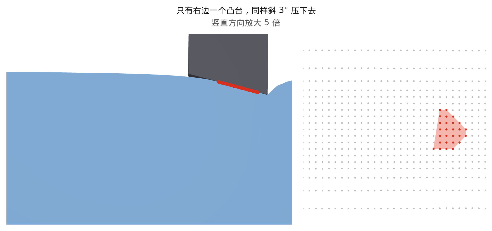
这张图是上一张的对照：只留右边那个凸台（中心 x = 0.2），倾角、压深、块都不变，画法同上一张（左幅剖面竖直放大 5 倍，右幅红点是受力的块面网格点、粉色是接触区）。对比两张可以看出，右凸台底下块的凹陷和右幅的接触区几乎一样（最深一档受力节点同为 64 个，位置相同），说明左凸台碰不到块时，成对压和单个压是同一回事；「成对 = 单个」的恒等式比的就是这两次计算。
压深 0.003 时只有前缘一条宽约 0.042 的窄月牙接触着，标签网格在月牙宽度方向只有约 7 个单元，这一档的标签偏低（旧的位移驱动标签对边界元为 0.94），0.006、0.012 两档在 ±2% 以内。
同一刚体上两个凸台水平压入时，能量应该等于各压一个之和的 \(c\) 倍。间距 \(10a\) 时有一格算出偏差 2.1%，查下来是块的能量在两种状态之间跳（相差 0.43%），再经两步外推放大成的；两种状态下的比值本身都在 0.9984 到 1.0034 之间。所以这类比值的判据改成同一网格、同一间隙厚度下的原值相比，不再各自外推后再比。
一个软压头被上下两块板同时夹着压，和只压一侧相比，轴对称有限元给出「夹压 ÷ 单压」在 0.9909 到 0.9963 之间，差别不到 1%，没超过事先定的 1% 门槛，所以这种情况不单独造标签。
 这张图展示「夹在中间」的情形：一个两头都是球冠的软圆柱（半径 2.4，球冠 R = 1、水平半径 0.6，E = 1e5）被上下两块刚板（灰）对称地夹着压，每一侧压深 0.024。轴对称有限元只算了下半个物体（上表面是中面对称面），这里关于中轴、再关于中面各镜像一次，画出整个物体，没有放大。上幅是整个物体，变形只在上下两个球冠处；下幅放大下侧接触区，红点是有限元判为接触的表面节点，接触区半径约 0.155，和只压一侧（上一张独立裁判图）几乎相同。两种压法的弹性能之比（夹压 ÷ 单压）在 0.9909 到 0.9963 之间，差别不到 1%，所以这种情况不单独造标签。
这张图展示「夹在中间」的情形：一个两头都是球冠的软圆柱（半径 2.4，球冠 R = 1、水平半径 0.6，E = 1e5）被上下两块刚板（灰）对称地夹着压，每一侧压深 0.024。轴对称有限元只算了下半个物体（上表面是中面对称面），这里关于中轴、再关于中面各镜像一次，画出整个物体，没有放大。上幅是整个物体，变形只在上下两个球冠处；下幅放大下侧接触区，红点是有限元判为接触的表面节点，接触区半径约 0.155，和只压一侧（上一张独立裁判图）几乎相同。两种压法的弹性能之比（夹压 ÷ 单压）在 0.9909 到 0.9963 之间，差别不到 1%，所以这种情况不单独造标签。
两个和块一样软的球冠头压头，同时压同一块软块，中心距按压深 0.012 时接触半径的 4 倍定。同时压的能量除以两次单独压之和，边界元给出压深 0.006、0.009、0.012 时依次是 0.95538、0.94587、0.93800，比两个刚性平底大，因为一半变形发生在球里，传给另一处的少。
最早的标签代码只能让压头是刚体。改成两侧都是软的有限元以后，默认的收敛条件会让牛顿迭代停得太早，同一配置跑两次能差到 1.68 倍和 1.85 倍 Hertz；收紧收敛条件后解唯一，耗时多约 13%。现在所有标签都用收紧后的设置。
hydro 和它的死结
hydro 怎么算
hydro 在每个物体内部预先画好压力分布：
\[p=\frac{E_h}{D}\times s.\]
- \(s\)：这一点离物体表面的深度。
- \(E_h\)：人为设定的模量，和材料真实的硬度无关。
- \(D\)：物体内离表面最远的距离（球就是半径）。
- \(E_h/D\)：压力随深度增加的速度。
两物体重叠时，在重叠区每一点取两边压力中小的那个，积分得到能量：
\[U=\int_{\text{重叠区}}\min(p_A,p_B)\,dV,\]
\(dV\) 是体积元。直观理解：把两个物体想成两块里面压力越往里越大的果冻，重叠得越深、越多，能量越大。
 这张图展示了 hydro 怎样算能量。左边橙色是物体 A，右边绿色是物体 B，颜色从边缘的浅色到中心的深色表示压力越往里越大，黑色箭头标的是一点离表面的深度 s，压力和深度成正比。通过对比两个物体各自的压力颜色和两圆相交处的蓝色重叠区，可以看出 hydro 事先把压力画死在每个物体里，碰撞时在重叠区每点取两边压力中小的那个加起来，所以每个物体的压力场与对面是谁、旁边有没有别的接触无关。
这张图展示了 hydro 怎样算能量。左边橙色是物体 A，右边绿色是物体 B，颜色从边缘的浅色到中心的深色表示压力越往里越大，黑色箭头标的是一点离表面的深度 s，压力和深度成正比。通过对比两个物体各自的压力颜色和两圆相交处的蓝色重叠区，可以看出 hydro 事先把压力画死在每个物体里，碰撞时在重叠区每点取两边压力中小的那个加起来，所以每个物体的压力场与对面是谁、旁边有没有别的接触无关。
 这张图展示了 hydro 原论文里的压力场。灰色是柔性物体，Exterior 指物体外部，中间白色的 Rigid Core 是物体内部的刚性核心，灰色越深压力越大；蓝色方块是插进来的刚体，橙色箭头是物体压在方块上的压力，绿色箭头和绿色虚线是这些压力的合力方向。通过对比灰色从边缘到 Rigid Core 逐渐变深和橙色箭头的分布，可以看出压力只由这一点在物体里的深度决定，与压进来的是什么无关。
这张图展示了 hydro 原论文里的压力场。灰色是柔性物体，Exterior 指物体外部，中间白色的 Rigid Core 是物体内部的刚性核心，灰色越深压力越大；蓝色方块是插进来的刚体，橙色箭头是物体压在方块上的压力，绿色箭头和绿色虚线是这些压力的合力方向。通过对比灰色从边缘到 Rigid Core 逐渐变深和橙色箭头的分布，可以看出压力只由这一点在物体里的深度决定，与压进来的是什么无关。
我们给它的加强版叫 hydro++：每个物体的压力分布不再用上面那个公式，而是一张任意的三维分布，由数据拟合出来。唯一的要求是越深越大，并且固定在物体上，不随对手是谁、压在哪里、什么时候而变。
死结
一个块，两个独立的压头 P、Q，三种情况：① P 单独压；② Q 单独压；③ P、Q 同时压。三种情况下物体、位置、压深都一样。\(U_①,U_②,U_③\) 表示三种情况的真实能量，带上标 hydro 的表示 hydro 算出的能量。
A hydro 只能相加，真值要打折
已知：三种情况的物体、位置、压深都一样；求：「同时压」与「单独压之和」的关系，hydro 与真值各是多少。
\[\begin{cases}\color{#c0392b}{U^{\text{hydro}}_③=U^{\text{hydro}}_①+U^{\text{hydro}}_②} & \color{#c0392b}{(1)}\\[4pt] \color{#c0392b}{U_③=c\,(U_①+U_②),\quad c<1} & \color{#c0392b}{(2)}\end{cases}\ \color{#c0392b}{\Longrightarrow\ \text{hydro 的「同时压」比真值多出 } 1/c-1}\]
式 (1)：hydro 三种情况用的是同一组压力分布，两处重叠区不相交，积分可以拆开；压力图只知道「这一点重叠了多深」，不知道旁边还有一个压头。
式 (2)：真实弹性体里 P 压下去时，周围表面跟着下陷（2.1 节式 (2)），Q 那里等于已经被压低了一点，需要压入的量变少，存的能量也就少了。\(c\) 衡量两处接触互相影响的强弱，边界元算出：中心距为接触半径 4 倍时为 0.8606，10 倍时为 0.9399。
结果：两个压头越近 → \(c\) 越小 → hydro 的相加关系偏得越多，因为互相牵连越强，真实能量打的折越大。
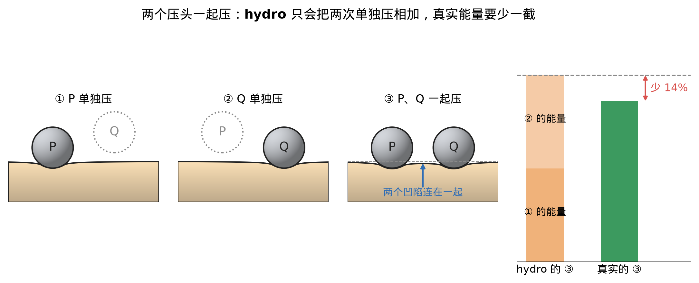
这张图展示了两个压头一起压时 hydro 为什么一定会错。左边三幅图是同一块和两个压头 P、Q 的三种情况：① 只有 P 压，② 只有 Q 压，③ 两个一起压，灰色实心球是正在压的压头，虚线空圈是这一次没压的压头。第 ③ 幅里灰色虚线是块原来的表面，蓝色箭头指出两个凹陷在中间连成了一片。最右边的柱状图里，橙色柱是 hydro 算的 ③，由 ① 的能量和 ② 的能量叠起来，绿色柱是真实的 ③，灰色虚线是 ① 加 ② 的高度。通过对比两根柱子和它们之间的红色差距箭头，可以看出 P 压下去时把 Q 底下也带低了，Q 要压进去的量变少，所以真实能量只有两次单独压之和的 c 倍（两压头中心距为接触半径 4 倍时 c = 0.8606，少约 14%），但 hydro 的压力图不知道旁边还有压头，只能相加。
 这张图展示死结的平底情形：一个刚性压头上两个平底凸台（半径 0.1，中心距 0.4，即接触半径的 4 倍）同时压同一块软块，压到最深一档（0.012）停稳后。左幅是过两凸台中心的竖直剖面，竖直方向放大 5 倍，两个凸台把块面压下同样深，两凸台之间那段块面也被一起带着往下沉，比外侧略低，这就是两处接触互相影响的来源。右幅从正上方看块顶面，灰点是块面网格点，粉色是每个凸台底下各自的接触区。红色是 IPC 实际施加了接触力的块节点：压头的点落在块的某个三角形上时，力按位置分到这个三角形的三个角；两条棱靠近时，力分到块那条棱的两端。所以红色区域比真正贴住的地方大一圈，大约一个网格单元，网格越粗这圈越宽。最深一档两个凸台下整面受力节点共 162 个；凸台外那一圈红点是凸台边缘压在块的三角形上带进来的，离凸台面最远约 0.027。凸台底面是半径 0.1 的圆，接触区画出来是不规则的多边形、两个凸台还略有不同：这是粗网格（凸台半径只有 4 个点距）上 IPC 真实的受力节点，不是凸台形状。
这张图展示死结的平底情形：一个刚性压头上两个平底凸台（半径 0.1，中心距 0.4，即接触半径的 4 倍）同时压同一块软块，压到最深一档（0.012）停稳后。左幅是过两凸台中心的竖直剖面，竖直方向放大 5 倍，两个凸台把块面压下同样深，两凸台之间那段块面也被一起带着往下沉，比外侧略低，这就是两处接触互相影响的来源。右幅从正上方看块顶面，灰点是块面网格点，粉色是每个凸台底下各自的接触区。红色是 IPC 实际施加了接触力的块节点：压头的点落在块的某个三角形上时，力按位置分到这个三角形的三个角；两条棱靠近时，力分到块那条棱的两端。所以红色区域比真正贴住的地方大一圈，大约一个网格单元，网格越粗这圈越宽。最深一档两个凸台下整面受力节点共 162 个；凸台外那一圈红点是凸台边缘压在块的三角形上带进来的，离凸台面最远约 0.027。凸台底面是半径 0.1 的圆，接触区画出来是不规则的多边形、两个凸台还略有不同：这是粗网格（凸台半径只有 4 个点距）上 IPC 真实的受力节点，不是凸台形状。
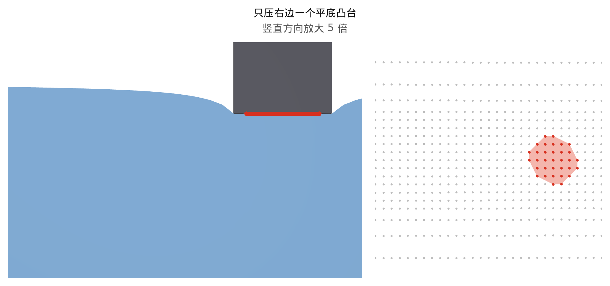
这张图是死结里「只压一个」的那次计算：同一块、同一压深，只留右边凸台（x = 0.2），画法同上一张。和上一张比，右凸台底下的接触区一样大（最深一档整面受力节点 81 个），但剖面上左边的块面不再被压下去。成对时块面整体先被另一个凸台带着沉了一点，所以每个凸台分到的弹性能比单压时少：两个一起压的能量是单压的 1.72 倍而不是 2 倍，对应 c ≈ 0.861，边界元给 0.8606。
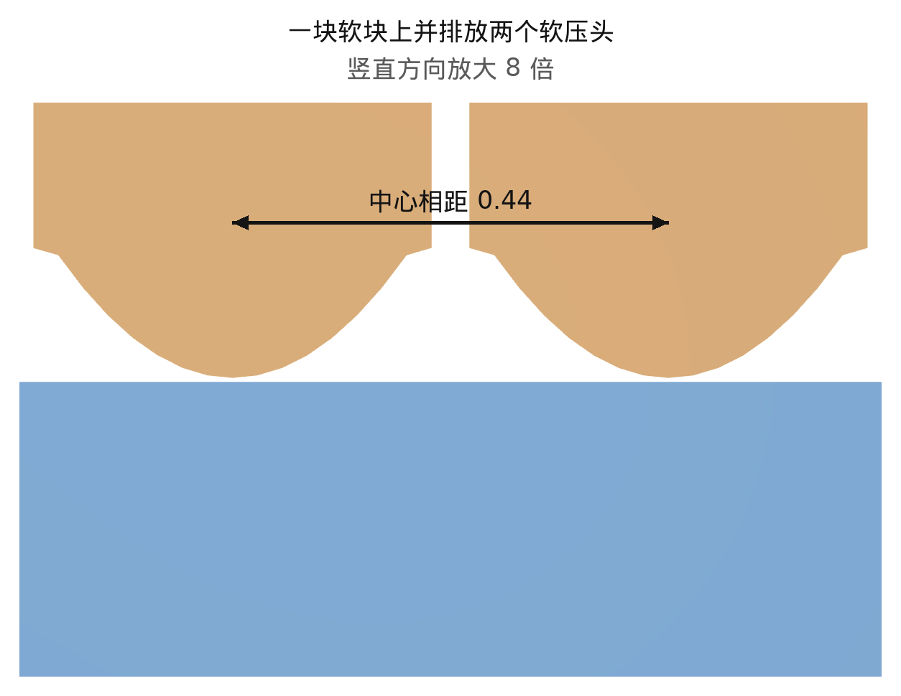
这张图是两压头实验压之前过两个压头中心的剖面，竖直方向放大 8 倍。上面两个橙色软压头的底面都是半径 1 的球冠，球冠最低点刚好碰到下面的蓝色软块，两个压头中心相距 0.44（图中黑色尺寸线），块和压头的杨氏模量都是 1e5。后面的剖面图和剖线图都来自这一套几何，分别让两个压头一起压、只压左边一个。
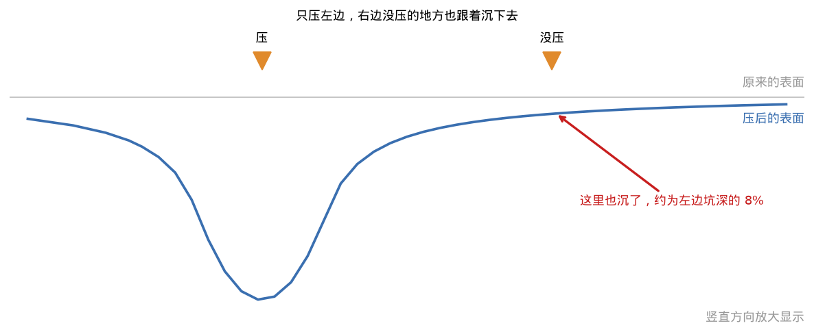
这张图展示了只压一个压头时，旁边没压的地方也会跟着沉下去。实验是两个一样的软球冠压头（半径 1，杨氏模量 1e5）摆在一块同样软的块上，中心相距 0.44，只让左边那个往下压 0.012，蓝线是压完以后过两个压头中心的块表面，灰线是原来的表面，竖直方向放大显示（左边坑最深处只有 0.0055）。左边橙色三角下面压出一个坑；右边橙色三角下面没有压头，蓝线在那里仍然比灰线低，低了左边坑深的 8%。如果再把右边的压头压下去，它要达到同样的深度就可以少压这一段，存进去的能量也就比单独压时少，hydro 把两处分开算再相加，算不出这个差别。
 这张图展示了两个压头同时压时，两个坑之间的块面也被一起带下去。图是上一张同一组实验让两个压头都压到 0.012 时，过两个压头中心的剖面，橙色是两个软压头，蓝色是块，竖直方向放大了 8 倍才看得清坑。两个坑底各沉了 0.0057，两坑正中间没有压头的地方也沉了 0.0020，约为坑深的三分之一，所以两处接触不能各算各的。
这张图展示了两个压头同时压时，两个坑之间的块面也被一起带下去。图是上一张同一组实验让两个压头都压到 0.012 时，过两个压头中心的剖面，橙色是两个软压头，蓝色是块，竖直方向放大了 8 倍才看得清坑。两个坑底各沉了 0.0057，两坑正中间没有压头的地方也沉了 0.0020，约为坑深的三分之一，所以两处接触不能各算各的。
B hydro 至少错多少
已知：A 的两个关系；三种情况的相对误差都不超过 \(\varepsilon\)；求：\(\varepsilon\) 的下界。
\[\begin{cases}\color{#c0392b}{U^{\text{hydro}}_{①,②}\ge(1-\varepsilon)\,U_{①,②}} & \color{#c0392b}{(1)}\\[4pt] \color{#c0392b}{U^{\text{hydro}}_③\le(1+\varepsilon)\,U_③} & \color{#c0392b}{(2)}\\[4pt] \color{#c0392b}{U^{\text{hydro}}_③=U^{\text{hydro}}_①+U^{\text{hydro}}_②,\quad U_③=c\,(U_①+U_②)} & \color{#c0392b}{(3)}\end{cases}\ \color{#c0392b}{\Longrightarrow\ \varepsilon\ge\frac{1-c}{1+c}}\]
式 (1)：单独压时 hydro 至少有真值的一减误差那么多。
式 (2)：同时压时 hydro 至多有真值的一加误差那么多。
式 (3)：A 的两个关系。
结果：把 (1) 的两项相加，用 (3) 换成同时压，再和 (2) 比较。代入 \(c\)，至少错 7.49%（4 倍间距）或 3.10%（10 倍间距），和压力分布怎么取无关；实际拟合得到 7.56% 和 3.13%。hydro 的「一起压」只能是「单独压之和」，真值却打了折，这个差必须分摊到某个地方；两边各分一半时误差最小，也就是这个数。
 这张图展示了 hydro 的误差最低能降到多少。横轴是两个压头的中心距，以接触半径为单位，纵轴是 hydro 至少会有的误差，红色曲线就是这条下限。通过对比横轴「4 倍」处的黑点（至少错 7.49%）和「10 倍」处的黑点（至少错 3.10%），以及红色曲线随间距变小而升高的走势，可以看出两个压头越近，hydro 至少错得越多。曲线下的淡红色区域是 hydro 无论怎么调压力图都到不了的，所以这个误差由它的算法结构决定，与拟合好坏无关。
这张图展示了 hydro 的误差最低能降到多少。横轴是两个压头的中心距，以接触半径为单位，纵轴是 hydro 至少会有的误差，红色曲线就是这条下限。通过对比横轴「4 倍」处的黑点（至少错 7.49%）和「10 倍」处的黑点（至少错 3.10%），以及红色曲线随间距变小而升高的走势，可以看出两个压头越近，hydro 至少错得越多。曲线下的淡红色区域是 hydro 无论怎么调压力图都到不了的，所以这个误差由它的算法结构决定，与拟合好坏无关。
C 辅助论证：压力只随深度变时的下界
已知：hydro++ 的压力场只随离表面的深度变；两个压头 × 两个块共四种组合的标签；求：这种场能否同时对上四种组合。
\[\begin{cases}\color{#c0392b}{p=c\sqrt s} & \color{#c0392b}{(1)}\\[4pt] \color{#c0392b}{c_{\text{合}}^{-2}=c_A^{-2}+c_B^{-2}} & \color{#c0392b}{(2)}\\[4pt] \color{#c0392b}{T_{ij}=u_i+v_j} & \color{#c0392b}{(3)}\end{cases}\ \color{#c0392b}{\Longrightarrow\ T_{11}+T_{22}=T_{12}+T_{21}}\]
式 (1)：要对上 Hertz 的 2.5 次方，只随深度变的场只能取这一种形状，每个物体只剩一个强度。
式 (2)：两个物体压在一起时，两边像串联的弹簧一样把柔度相加。
式 (3)：所以四种组合各自需要的柔度（\(i\) 是压头，\(j\) 是块）必须能写成「压头一份加块一份」。
结果：对角两格之和必须相等，标签给出的并不相等（环面 1.328 对 1.539，波浪面 1.431 对 1.611，材料 1.125 对 0.751），摊得最匀时至少分别错 3.7%、3.0% 和 10.1%。hydro++ 让每个物体自带一份软硬，碰在一起只能简单相加；真实接触的结果还和两边怎么搭配有关，加法凑不出来。这个下界依赖「压力只随深度变」这一前提，所以只算辅助论证；主论证是 B 的死结。
![这张图展示了如果每个物体的压力场只随离表面的深度变，hydro++ 在环面、波浪面、两种材料三组实验上至少错 3.7%、3.0%、10.1%。每组下面是一个 2×2 格子，行是半径 1 和 0.5 两个刚球压头，列是两个块（环面的顶部和内圈、波浪面的波峰和波谷、两块杨氏模量 1e5 和 2e5 的平块），①到④是四种组合；上面一排是半径 1 那一行各构型从正上方看块顶面的接触斑，每张放在对应那一列正上方：灰点是块面的网格点，离球面不到 4 倍间隙 \(\hat d\) 的点涂成红色，粉色是红点围出的接触区；平块上是圆，环面内圈被拉成很扁的长条，波谷也比波峰宽，可见块面怎么弯决定了接触斑的形状。两种材料的块形状相同，只放 E 1e5 那一张。格子里的数是由标签算出的串联柔度 T：hydro++ 在这种场下给每个物体一份柔度，两物体压在一起时两份相加，所以四格的 T 必须能拆成「行的一份加列的一份」，等价于对角两格之和 ①+④ 等于另两格之和 ②+③。标签里这两个和并不相等，环面 1.328 对 1.539、波浪面 1.431 对 1.611、材料 1.125 对 0.751，hydro++ 只能把这个差摊到四个构型上，最好的摊法也有下方红字那么大的能量误差，材料组差得最多。这个下界依赖「压力只随深度变」的 √ 型场这一前提，允许场在三维里任意变化时不一定成立，所以只作为 §4.2 死结之外的辅助论证。](assets/images/w34_s4_2_t5_tables.png) 这张图展示了如果每个物体的压力场只随离表面的深度变，hydro++ 在环面、波浪面、两种材料三组实验上至少错 3.7%、3.0%、10.1%。每组下面是一个 2×2 格子，行是半径 1 和 0.5 两个刚球压头，列是两个块（环面的顶部和内圈、波浪面的波峰和波谷、两块杨氏模量 1e5 和 2e5 的平块），①到④是四种组合；上面一排是半径 1 那一行各构型从正上方看块顶面的接触斑，每张放在对应那一列正上方：灰点是块面的网格点，离球面不到 4 倍间隙 \(\hat d\) 的点涂成红色，粉色是红点围出的接触区；平块上是圆，环面内圈被拉成很扁的长条，波谷也比波峰宽，可见块面怎么弯决定了接触斑的形状。两种材料的块形状相同，只放 E 1e5 那一张。格子里的数是由标签算出的串联柔度 T：hydro++ 在这种场下给每个物体一份柔度，两物体压在一起时两份相加，所以四格的 T 必须能拆成「行的一份加列的一份」，等价于对角两格之和 ①+④ 等于另两格之和 ②+③。标签里这两个和并不相等，环面 1.328 对 1.539、波浪面 1.431 对 1.611、材料 1.125 对 0.751，hydro++ 只能把这个差摊到四个构型上，最好的摊法也有下方红字那么大的能量误差，材料组差得最多。这个下界依赖「压力只随深度变」的 √ 型场这一前提，允许场在三维里任意变化时不一定成立，所以只作为 §4.2 死结之外的辅助论证。
这张图展示了如果每个物体的压力场只随离表面的深度变，hydro++ 在环面、波浪面、两种材料三组实验上至少错 3.7%、3.0%、10.1%。每组下面是一个 2×2 格子，行是半径 1 和 0.5 两个刚球压头，列是两个块（环面的顶部和内圈、波浪面的波峰和波谷、两块杨氏模量 1e5 和 2e5 的平块），①到④是四种组合；上面一排是半径 1 那一行各构型从正上方看块顶面的接触斑，每张放在对应那一列正上方：灰点是块面的网格点，离球面不到 4 倍间隙 \(\hat d\) 的点涂成红色，粉色是红点围出的接触区；平块上是圆，环面内圈被拉成很扁的长条，波谷也比波峰宽，可见块面怎么弯决定了接触斑的形状。两种材料的块形状相同，只放 E 1e5 那一张。格子里的数是由标签算出的串联柔度 T：hydro++ 在这种场下给每个物体一份柔度，两物体压在一起时两份相加，所以四格的 T 必须能拆成「行的一份加列的一份」，等价于对角两格之和 ①+④ 等于另两格之和 ②+③。标签里这两个和并不相等，环面 1.328 对 1.539、波浪面 1.431 对 1.611、材料 1.125 对 0.751，hydro++ 只能把这个差摊到四个构型上，最好的摊法也有下方红字那么大的能量误差，材料组差得最多。这个下界依赖「压力只随深度变」的 √ 型场这一前提，允许场在三维里任意变化时不一定成立，所以只作为 §4.2 死结之外的辅助论证。
推导
hydro 这边：三种情况用的是同一组压力分布，两处重叠区不相交，积分可以拆开，所以不管压力分布长什么样，都有
\[U^{\text{hydro}}_③=U^{\text{hydro}}_①+U^{\text{hydro}}_②.\]
直观理解：hydro 的压力图只知道「这一点重叠了多深」，不知道旁边还有一个压头，所以两处各算各的再相加。
真实弹性体这边：由 2.1 节第二步，P 压下去时，周围表面按 \(1/\text{距离}\) 跟着下陷，Q 那里等于已经被压低了一点，需要压入的量变少，存的能量也就少了：
\[U_③=c\,(U_①+U_②),\qquad c<1.\]
\(c\) 衡量两处接触互相影响的强弱，两个压头越近，\(c\) 越小。边界元算出：中心距为接触半径 4 倍时 \(c=0.8606\)，10 倍时 \(c=0.9399\)。
现在求 hydro 至少错多少。设三种情况的相对误差都不超过 \(\varepsilon\)。单独压时 hydro 至少有真值的 \((1-\varepsilon)\)：\(U^{\text{hydro}}_{①,②}\ge(1-\varepsilon)U_{①,②}\)；同时压时 hydro 至多有真值的 \((1+\varepsilon)\)：\(U^{\text{hydro}}_③\le(1+\varepsilon)\,c\,(U_①+U_②)\)。把第一式的两项相加，用 hydro 的相加关系换成 \(U^{\text{hydro}}_③\)，再和第二式比较：
\[(1-\varepsilon)(U_①+U_②)\le(1+\varepsilon)\,c\,(U_①+U_②)\quad\Longrightarrow\quad\varepsilon\ge\frac{1-c}{1+c}.\]
代入 \(c\)，至少错 7.49%（4 倍间距）或 3.10%（10 倍间距），和压力分布怎么取无关。直观理解：hydro 的「一起压」只能是「单独压之和」，真值却是它的 \(c\) 倍，这个差必须分摊到某个地方；两边各分一半时误差最小，也就是这个数。实际拟合得到 7.56% 和 3.13%。
不分摊、只拟准其中一部分也没用，另一部分就按推导的量和方向错。只拿两次单独压训练，训练误差到机器精度（\(10^{-15}\)），去预测同时压时多出 16.19%（4 倍间距）和 6.40%（10 倍间距），正好是 \(1/c-1\)；拿同时压和 P 单独压训练，去预测 Q 单独压时少了 27.87% 和 12.03%，正好是 \(2c-2\)。能对上这个构型，就一定对不上另一个。
两个物体都软时死结仍在。把上面的两个刚性平底换成两个和块一样软的球冠头压头（3.5 节），代入边界元给的 \(c\)，hydro 至少错 2.28%、2.78%、3.20%（压深 0.006、0.009、0.012）。比平底小，因为一半变形发生在球里，传给另一处的少。
推导：辅助论证
还有一组辅助实验，结论是：如果 hydro++ 的压力场只随离表面的深度变，那么在环面、波浪面、两种材料这三组实验上，它至少分别错 3.7%、3.0% 和 10.1%。每组用半径 1 和 0.5 两个刚球压头，分别压两个块（环面的顶部和内圈、波浪面的波峰和波谷、杨氏模量 \(10^5\) 和 \(2\times10^5\) 的两个平块），一共四种组合，每种组合各造一条标签。压力场只随深度变时，要对上 Hertz 的 \(\delta^{5/2}\)，场只能取 \(p=c\sqrt s\) 这一种形状，每个物体只剩一个强度 \(c\)；两个物体压在一起时，两边像串联的弹簧一样把柔度相加：
\[c_{\text{合}}^{-2}=c_A^{-2}+c_B^{-2}.\]
所以四种组合各自需要的柔度 \(T_{ij}\)（\(i\) 是压头，\(j\) 是块）必须能写成「压头一份加块一份」，\(T_{ij}=u_i+v_j\)，这等价于对角两格之和相等：\(T_{11}+T_{22}=T_{12}+T_{21}\)。标签给出的这两个和并不相等：环面 1.328 对 1.539，波浪面 1.431 对 1.611，材料 1.125 对 0.751。hydro++ 只能把这个差摊到四种组合上，摊得最匀时的能量误差就是上面三个数。直观理解：hydro++ 让每个物体自带一份软硬，两个物体碰在一起时只能把两份简单相加；真实接触里，球压在弯的面上还是平的面上、压的是软块还是硬块，结果还和两边怎么搭配有关，加法凑不出来。这个下界依赖「压力只随深度变」这一前提，hydro++ 的场允许在三维里任意变化时，它不一定还成立，所以只算辅助论证；主论证是上面的死结，那里不管压力分布怎么取都成立。
能记住，学不会
15 个物体两两配对，共 102 对：68 对给 hydro++ 训练，10 对用来调平滑正则，24 对留作测试。测试的每一对，两个物体在训练里都分别出现过，只是没有以这种组合一起出现过。hydro++ 在训练过的配对上误差 0.0003%，在没见过的配对上最大 12.12%。它能背下见过的，但没学到「答案只取决于缝隙和合成模量」这条规律。
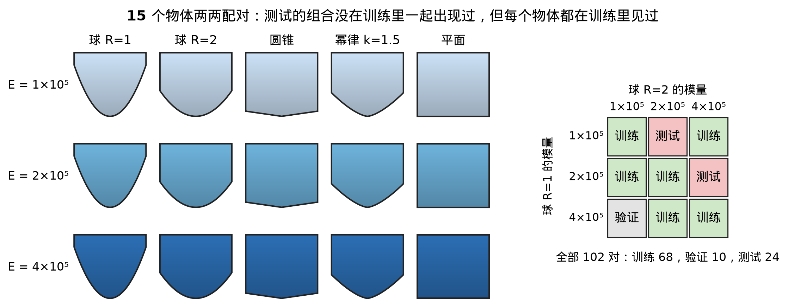
这张图展示了 hydro++ 泛化实验用的 15 个物体以及配对的划分方式。左边每一列是一种形状，依次是半径 1 的球、半径 2 的球、圆锥、幂律 k = 1.5 的尖头和平面，每个物体朝下的那条边就是它的表面轮廓；每一行是一种杨氏模量 E（1×10⁵、2×10⁵、4×10⁵），颜色越深越硬。右边的 3×3 方格以「球 R=1 对球 R=2」这一对形状为例，行是球 R=1 的模量，列是球 R=2 的模量，每格是一个具体配对，绿色是训练，红色是测试，灰色是验证。通过对比红色测试格和它所在行、所在列里的绿色训练格，可以看出每一行、每一列都有两个训练格，所以测试配对里的两个物体都在训练里和别的对手配过，只是这两个没有一起出现过。其余形状对也这样分，全部 102 对里训练 68 对、验证 10 对、测试 24 对，测试考的就是 hydro++ 能不能从见过的配对推出没见过的组合。
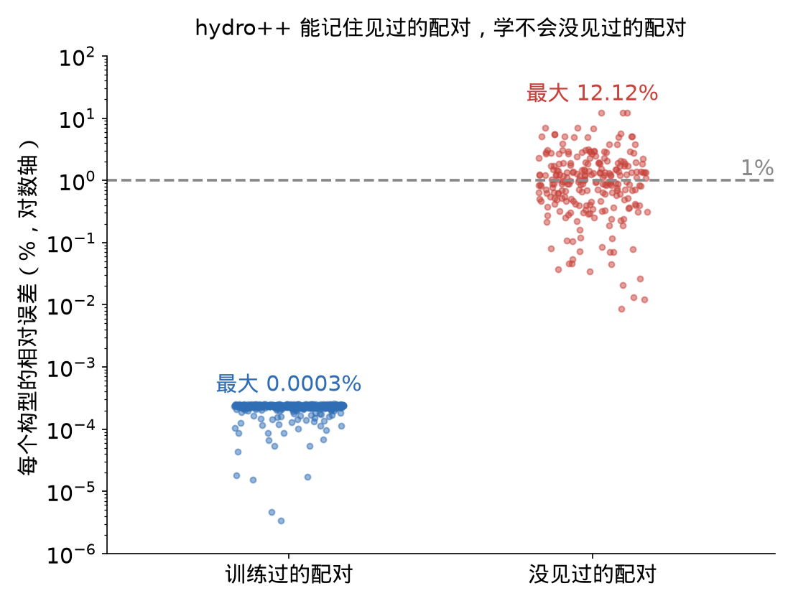
这张图展示了 hydro++ 能记住见过的配对，但推不到没见过的配对。左边蓝点是 464 个训练构型的误差，最大 0.0003%；右边红点是 240 个两物体没有一起出现过的构型，最大 12.12%，近一半在灰色 1% 线上方，两团相差三个多数量级。所以 hydro++ 记住的是每一对的答案，没有学到「能量只取决于缝隙和合成模量」这条规律。
自由度再多也只是背下来
压力场每多一份自由度，训练集里的冲突就会被拟掉一块。只随深度变的场，同一个凸台既水平压又斜着压，至少错 28% 到 35%；让场再随压头的位置变，就只剩 1.11%。取 \(p=c\,s/r\)（\(s\) 是深度，\(r\) 是到接触轴的距离）这样的场，任意两个球配对都精确等于 Hertz：离轴越近弹簧越硬，大球多出来的重叠正好落在软的外圈。15 个物体的循环赛共 198 个构型，给场 18720 个参数，能拟到 \(5.1\times10^{-15}\)。有限的训练集总能背下来；死结里物体和压力场都没变，参数再多也改不了「相加」这一条。
原版 hydro（压头刚性、不带压力场）只当消融对照：它的能量和球半径 \(R\)、平底半径 \(a\) 的平方成正比，真值是和 \(\sqrt R\)、\(a\) 成正比，半径差 2 倍时至少错 17.16%，实测拟合 17.24%。薄层底面粘结和不粘结共用一张场时至少错 10.1%，各学一张后拟到机器精度，说明的只是「按材料给场的规则看不到底面边界条件」。
Genesis 里 hydro 的实测
Genesis 是实现 hydro 的开源仿真器（现名 Genesis World，2024 年 12 月起于学术项目、现由 Genesis AI 公司支持），一个场景里可以同时放刚体、FEM 软体等多种物体；它的 hydro 和 SAP 求解器配在一起，另有一套接触是调用开源库 libuipc 做 IPC。本项目的演示、参数扫描都在 Genesis 里跑，IPC 部分走它调用的 libuipc。在里面实测了四种刚软组合，看它按自身公式给出的压深和弹性解差在哪里。
两个都软的物体：球（半径 0.1 m、1 kg）靠自重静置在底面固定的块（0.3 × 0.3 × 0.2 m）上，两侧压力场模量 \(E_h\) 各取 \(10^5\) 或 \(10^6\) Pa，四种组合的压深都在 1.784 到 1.787 mm 之间。把两侧 \(E_h\) 同时改大 10 倍，串联公式预言压深变成 0.316 倍，实测 0.9999 倍，几乎不变。原因是 Genesis 软–软的接触力等于一个全局参数乘重叠体积，\(E_h\) 在力里约掉了，只决定两侧压强相等的那个面落在哪个物体里。
这段视频展示 Genesis 里两个软物体之间的 hydro 接触：半径 0.1 m、1 kg 的软球（橙）从刚好碰到的位置靠自重落在软块（蓝）上，两者的压力场模量都是 1e5 Pa。画面是过球心的竖直剖面，竖直方向放大 8 倍；红色是球和块的剖面互相重叠的部分，hydro 允许两个物体重叠，接触力就按这片重叠算。看第 0 到 1.3 秒，球往下沉、红色区域长大，之后停在压深 1.79 mm（球半径的 1.8%），红色区域不再变化。
这段视频和上一段只差一处：两侧压力场模量都从 1e5 改成 1e6 Pa，画法相同（竖直放大 8 倍，红色是重叠部分）。看最后一秒停住时的压深：1.789 mm，和上一段只差 0.01%，红色重叠区的形状也一样，说明在 Genesis 的软–软接触里，把两侧压力场同时调硬十倍并不改变压深。
刚球压软块和软球压刚性地面互换，Hertz 给出的压深一样，Genesis 不一样。软的一方杨氏模量 \(10^7\) Pa、\(E_h=10^5\) Pa，球 1 kg 靠自重静置：
|
Genesis 实测 |
Hertz |
| 刚球压软块（场在块内）：球半径 0.1 → 0.05，压深变为 |
1.428 倍 |
1.260 倍 |
| 软球压刚性地面（场在球内）：同上 |
1.015 倍 |
1.260 倍 |
| 对调（软球压地面 ÷ 刚球压软块） |
半径 0.05：0.696；半径 0.1：0.980 |
1 |
场在块内时力和重叠体积成正比、也就和球半径成正比，小球陷得更深；场在球内时压力梯度 \(E_h/R\) 随球变大而变小，正好抵消重叠体积的增大。
这段视频展示刚球压软块：深灰的刚球（半径 0.05 m、1 kg）靠自重停在蓝色软块上，压力场只建在块里（模量 1e5 Pa）。竖直方向放大 2 倍，红色是球伸进块里的部分。看第 0 到 0.6 秒球沉下去，之后停在压深 8.05 mm。要和下一段（软球压刚性地面，同半径、同重量）比压深：这里是那边的 1.44 倍，而 Hertz 理论里两种情况压深相同。
这段视频把上一段的软硬对调：橙色软球（半径 0.05 m、1 kg、压力场模量 1e5 Pa）靠自重停在灰色刚性地面上，压力场只建在球里。竖直方向放大 2 倍，红色是球伸到地面以下的部分。约 0.1 秒就停住，压深 5.59 mm，是上一段刚球压软块的 0.696 倍：在 Genesis 里只是把哪一侧当软的对调，压深就变了三成。
两个都是刚体、各带压力场时，球半径从 0.05 m 换成 0.2 m，压深从 3.041 mm 变成 2.155 mm，比值 1.411；串联公式预言 1.417，Hertz 是 1.587。Genesis 按自己的公式给出压深（各组都在公式的 3% 以内），但半径怎么影响压深、对调软硬会怎样，都和弹性解不同，这是模型定义带来的。
这段视频展示两个都带压力场的刚体之间的 hydro 接触：深灰刚球（半径 0.05 m、1 kg）靠自重停在固定的浅灰刚体盒上。竖直方向放大 4 倍，红色是两者重叠的部分。看第 0 到 0.4 秒球沉下去，之后停在压深 3.04 mm。换成半径 0.2 m 的球（另一次运行）压深是 2.16 mm，两者之比 1.41，而 Hertz 给 1.59。
网络结构
总能量 = 每个接触区各自的能量 + 接触区之间的相互影响。
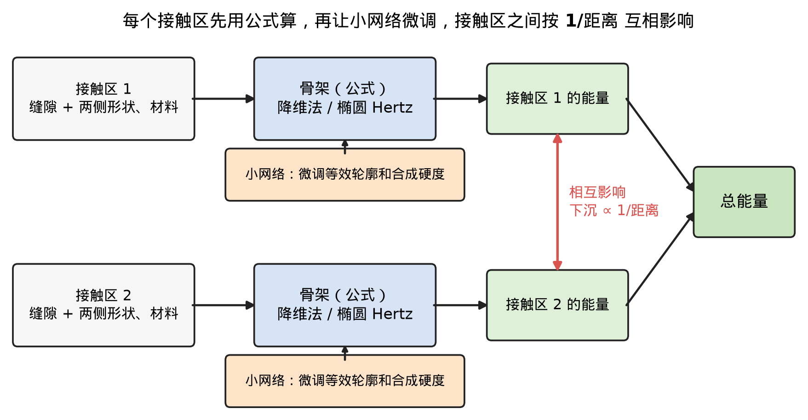
这张图展示了网络的结构。左边灰框是每个接触区的输入：两表面之间的缝隙，以及两侧各自的形状和材料。中间蓝色的「骨架（公式）」框用降维法或椭圆 Hertz 公式（椭圆 Hertz 见 8.2 节）算出主体能量，它下方橙色的「小网络」框只微调等效轮廓和合成硬度，两者合起来给出右边绿色框里各接触区的能量。通过对比两个接触区各自的流程和它们之间的红色双向箭头，可以看出接触区之间按下沉与距离成反比的规律互相影响，最后合成总能量，所以网络要学的东西很少。小网络修正后的等效轮廓仍随离中心的距离单调增加，所以「力等于能量对压深的导数」和「压得越深越硬」这两条性质照样成立。
单个接触区
输入是这个接触区两表面之间的缝隙 \(h\)，以及两侧各自的形状和材料。主体能量直接用 2.2 节的 \(U_0\) 算。网络（约 500 个参数）只输出两样小修正：对等效轮廓 \(g\) 的修正，以及（可选的，约 40 个参数）对合成模量 \(E^*\) 的修正，用来补上 3.3 节那种 \(a/R\) 不够小、变形不够小造成的偏差。修正后的等效轮廓仍然随 \(|x|\) 单调增加，所以 2.2 节的两个推论照样成立：力等于能量对压深的导数，并且压得越深越硬。
两侧的形状和材料要分开输入，不能只给合起来的 \(h\) 和 \(E^*\)。原因在 3.3 节：\(E^*\) 相同、但软的是弯的一侧还是平的一侧，结果差 1.6% 到 3.0%。只给合起来的量，网络就分不出这两种情况。
 这张图展示了两侧的形状和材料为什么要分开输入。左边两幅是两种情况，深色表示硬，浅色表示软：一种是硬球把软的平块压出凹坑，另一种是软球压在硬的平块上，软球底部被压平、块的顶面保持平直，两种情况的缝隙和合成硬度 E* 都一样。右图横轴是压深，纵轴是标签除以 Hertz 解析解的比值，灰色虚线是 Hertz（比值为 1），蓝线是软在平块的情况，红线是软在弯球的情况。通过对比蓝线和红线，以及两端黑色箭头标出的两线之差（最小压深处 1.6 个百分点，最大压深处 3.0 个百分点），可以看出合起来的量完全相同时，能量仍随「软的是哪一侧」变化，所以只给 h 和 E* 时网络分不出这两种情况。
这张图展示了两侧的形状和材料为什么要分开输入。左边两幅是两种情况，深色表示硬，浅色表示软：一种是硬球把软的平块压出凹坑，另一种是软球压在硬的平块上，软球底部被压平、块的顶面保持平直，两种情况的缝隙和合成硬度 E* 都一样。右图横轴是压深，纵轴是标签除以 Hertz 解析解的比值，灰色虚线是 Hertz（比值为 1），蓝线是软在平块的情况，红线是软在弯球的情况。通过对比蓝线和红线，以及两端黑色箭头标出的两线之差（最小压深处 1.6 个百分点，最大压深处 3.0 个百分点），可以看出合起来的量完全相同时，能量仍随「软的是哪一侧」变化，所以只给 h 和 E* 时网络分不出这两种情况。
修正项的输入里不含压深，所以能量对压深单调、并且越压越硬，这两条由结构本身保证，不用事后截断；训练时能量和力一起拟合。hydro 的压力场按物体各管各的，拆不出「缝隙 + 合成模量」这两个量，而它们正是这个网络的输入。
接触区之间
① 多个接触区的压深：自己压的 + 别处带下去的
已知：各接触区的力 \(F_i\)、两区中心距 \(r_{ij}\)、被压物体的有效硬度 \(E'\)、5.1 节的单区模型；求：各区的总压深 \(\delta_i\)。
\[\begin{cases}\color{#c0392b}{u(r)=\dfrac{F}{\pi E'\,r}} & \color{#c0392b}{(1)}\\[4pt] \color{#c0392b}{\delta_{e,i}=\delta_{e,i}(F_i)} & \color{#c0392b}{(2)}\end{cases}\ \color{#c0392b}{\Longrightarrow\ \delta_i=\delta_{e,i}(F_i)+\sum_{j\ne i}\frac{F_j}{\pi E'\,r_{ij}}}\]
式 (1)：集中力在距离 \(r\) 处造成的下沉（2.1 节式 (2) 的点力情形；Popov、Heß、Willert 2019 手册 §2.2 式 (2.2)）。
式 (2)：只靠自己的接触，力为 \(F_i\) 时要压多深，由 5.1 节的单区模型给出。
结果：每个接触区的压深，一部分是自己压出来的，另一部分是别的接触区把整片表面带着压下去的。给定各区压深，解这组方程就得到各区的力。别的区力越大、离得越近 → 本区被带下去越多，自己需要压的越少。
② 两个平底压头检验
已知：两个相同的平底压头，半径 \(a\)，中心距 \(r\)，同时压到同一深度 \(\delta\)；求：同时压与单独压的能量之比 \(c\)。
\[\begin{cases}\color{#c0392b}{F_1=2E'a\,\delta} & \color{#c0392b}{(1)}\\[4pt] \color{#c0392b}{\delta=\dfrac{F}{2E'a}+\dfrac{F}{\pi E'r}} & \color{#c0392b}{(2)}\\[4pt] \color{#c0392b}{U=\tfrac12F\delta} & \color{#c0392b}{(3)}\end{cases}\ \color{#c0392b}{\Longrightarrow\ c=\frac{U_③}{U_①+U_②}=\frac{1}{1+\dfrac{2a}{\pi r}}}\]
式 (1)：单个平底的力与压深成正比（Popov、Heß、Willert 2019 手册 §2.5.1）。
式 (2)：① 的结果用在两个相同平底上，自己那部分由 (1) 反解。
式 (3)：力与压深成正比时，能量是力乘压深的一半。
结果：解 (2) 得同时压时每个平底的力，与单独压的力之比就是 \(c\)。中心距为 4 倍半径时 0.863、10 倍时 0.940，边界元为 0.861 和 0.940；两个软球压同一软块时，与边界元相差不到 0.07%。两个压头越近 → \(c\) 越小，因为互相带下去的越多。4.2 节里 hydro 怎么都做不对的那件事，在这里是结构本身就带着的一项。
 这张图展示了下面那张耦合系数图里平底那组边界元算的情形：两个刚性平底圆柱（半径 a = 0.1，中心距 4a）同时压进弹性块 0.006，图是沿两个平底中心连线竖直剖开的截面，竖直方向放大了 30 倍。两个灰色矩形是平底的剖面，蓝色是块的剖面，灰色虚线是块原来的表面；平底底面贴在块被压下的平坑里，两坑之间的块面没有被压头碰到，也被带低了 0.56 倍压深，比外侧远处更低，这部分就是一个压头替另一个压头提前压下去的量，也就是两区写法里的耦合项。
这张图展示了下面那张耦合系数图里平底那组边界元算的情形：两个刚性平底圆柱（半径 a = 0.1，中心距 4a）同时压进弹性块 0.006，图是沿两个平底中心连线竖直剖开的截面，竖直方向放大了 30 倍。两个灰色矩形是平底的剖面，蓝色是块的剖面，灰色虚线是块原来的表面；平底底面贴在块被压下的平坑里，两坑之间的块面没有被压头碰到，也被带低了 0.56 倍压深，比外侧远处更低，这部分就是一个压头替另一个压头提前压下去的量，也就是两区写法里的耦合项。
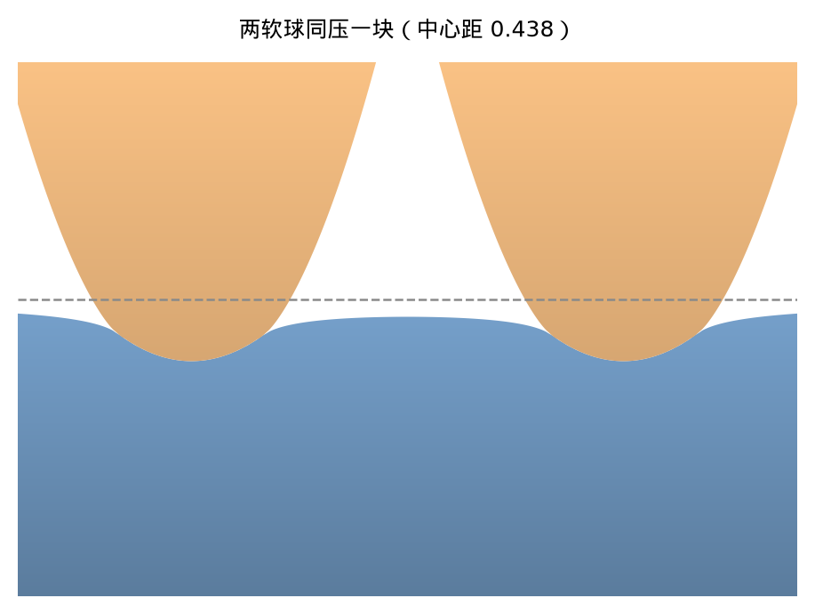
这张图展示了下面那张耦合系数图里软球那组边界元算的情形：两个半径 1、和块一样软的球，中心距 0.438，同时压进块 0.006，图是沿两球心连线竖直剖开的截面，竖直方向放大了 20 倍。橙色是两个球下部的剖面，蓝色是块的剖面，灰色虚线是块原来的表面；接触处球面和块面贴在一起，块面最深只下沉 0.52 倍压深，另一半由球自己被压扁吃掉，两球之间的块面只被带低 0.14 倍压深，所以软球之间的相互影响比平底弱。下幅是从正上方看块面：灰点是边界元在两个软球底下各自的计算节点，接触压力大于零的涂红，粉色是各自的接触区；两块接触区都是圆、大小相同，半径约 0.073（节点间距 0.009）。
 这张图展示了「两区加耦合」的写法算出的耦合系数 c 和边界元对得上。c 是两个压头同时压时的能量除以各自单独压的能量之和，c 越小，两处互相影响越强；横轴是两接触区中心距除以接触半径。蓝线是两个平底按公式 1/(1+2a/(πr)) 算的 c，两个黑框是边界元在 4a 和 10a 处的结果，旁边写着边界元 0.861、0.940 和公式 0.863、0.940；橙色三角是两个与块同模量的软球（半径 1，中心距 0.438，三个压深），实心是公式、空心是边界元，两者重合，最多差 0.055%。软球的 c 比同距离的平底高，因为一半变形发生在球里，传到另一处的少。
这张图展示了「两区加耦合」的写法算出的耦合系数 c 和边界元对得上。c 是两个压头同时压时的能量除以各自单独压的能量之和，c 越小，两处互相影响越强；横轴是两接触区中心距除以接触半径。蓝线是两个平底按公式 1/(1+2a/(πr)) 算的 c，两个黑框是边界元在 4a 和 10a 处的结果，旁边写着边界元 0.861、0.940 和公式 0.863、0.940；橙色三角是两个与块同模量的软球（半径 1，中心距 0.438，三个压深），实心是公式、空心是边界元，两者重合，最多差 0.055%。软球的 c 比同距离的平底高，因为一半变形发生在球里，传到另一处的少。
推导
由 2.1 节第二步，一个集中力 \(F\) 在距离 \(r\) 处造成的下沉是 \(F/(\pi E'r)\)。所以第 \(i\) 个接触区的总压深由两部分组成：
\[\delta_i=\delta_{e,i}(F_i)+\sum_{j\ne i}\frac{F_j}{\pi E'\,r_{ij}}.\]
- \(\delta_i\)：第 \(i\) 区的总压深。
- \(F_i\)：第 \(i\) 区的接触力。
- \(\delta_{e,i}(F_i)\)：只靠自己的接触，力为 \(F_i\) 时要压多深，由 5.1 节的单区模型给出。
- \(r_{ij}\)：第 \(i\) 区和第 \(j\) 区中心之间的距离。
- \(E'\)：两区共同压着的那个物体的有效硬度。
直观理解：每个接触区的压深，一部分是自己压出来的，另一部分是别的接触区把整片表面带着压下去的。给定各区压深，解这组方程就得到各区的力。
用两个相同的平底压头检验。单个平底压深 \(\delta\) 时，力 \(F_1=2E'a\delta\)（\(a\) 是平底半径），即 \(\delta_e=F/(2E'a)\)。两个同时压到同一深度 \(\delta\)：
\[\delta=\frac{F}{2E'a}+\frac{F}{\pi E'r}\quad\Longrightarrow\quad F=\frac{2E'a\,\delta}{1+\dfrac{2a}{\pi r}}.\]
平底的力和压深成正比，能量是 \(\tfrac12F\delta\)，所以
\[c=\frac{U_③}{U_①+U_②}=\frac{F}{F_1}=\frac{1}{1+\dfrac{2a}{\pi r}}.\]
\(r=4a\) 时 \(c=0.863\)，\(r=10a\) 时 \(c=0.940\)，边界元为 0.861 和 0.940。两个软球压同一软块时，算出的 \(c\) 和边界元相差不到 0.07%。4.2 节里 hydro 怎么都做不对的那件事，在这里是结构本身就带着的一项。
这套写法不用训练，逐项和边界元比：
| 构型 |
骨架 + 互柔度 |
边界元 |
| 平底，中心距 \(4a\) |
0.86270 |
0.86064 |
| 平底，中心距 \(10a\) |
0.94015 |
0.93985 |
| 两软球，压深 0.006 |
0.95558 |
0.95538 |
| 两软球，压深 0.009 |
0.94623 |
0.94587 |
| 两软球，压深 0.012 |
0.93851 |
0.93800 |
平底 \(4a\) 高 0.0021，是因为两个凸台离得近，互柔度把对方的力当成了集中在一点的力；其余都在 0.0005 以内。这是结构能表达，不是网络已训练出的成绩。
最近两天
接进引擎：libuipc 是开源的 GPU 版 IPC 仿真库（C++/CUDA 写成，Python 包名 pyuipc），Genesis 的 IPC 接触底层就是调用它，本项目的网络最终也要经 Genesis 接到它上面。libuipc 可以挂我们自定义的能量项。测试中能量和力与参考值完全一致，Hessian（能量的二阶导数，牛顿法要用）误差在 \(10^{-15}\) 量级，牛顿法 3 步收敛。
这段视频展示了我们自己写的接触能量项挂进 libuipc 以后，能在 Genesis 里真的托住一个物体。画面中间的灰色刚球半径 0.1 m，从离地 2 cm 的地方落下，球和蓝灰色地面之间关掉了 IPC 自带的接触，能挡住它的只有我们加进去的那一项 Hertz 能量。看第 0.8 秒球落到最低的时候，它压进地面 7.27 mm，随后被这项能量推回去，弹到离地约 8 mm 再落下；视频结束时球还在小幅弹跳，压深 2.3 mm，仿真继续跑下去会停在 2.0 mm，和用 Hertz 公式算出的静止压深一致。
造标签：现在块不再固定（软–软时压头也不固定），用一对大小相等、方向相反的力把它们压在一起，等停稳再读能量。这样更接近 1 节「给定粗状态，取最小能量」的定义。物体在水平方向没有东西拉住，会慢慢漂走，所以钉住了中轴线上节点的水平位置。正确的解里这些节点本来就不横向移动，钉住它们只带来 0.05% 到 0.4% 的误差。
 这张图展示了现在造标签的加载方式。画面是过中心的剖面，上面橙色是底部带半径 1 球冠的软压头，下面蓝色是软块，两个都是杨氏模量 1e5，压到最深一档停稳后的样子按真实比例画出。两个物体都没有固定在任何地方：压头上每一点受一个向下的力，块上每一点受一个向上的力，两个红色箭头标的就是这两个力的方向，它们合起来大小相等、方向相反，把两个物体挤在一起。两个物体都能自由移动，就可能整体往旁边漂走，所以把中轴线上的节点（图中竖排的黑点，压头和块各有 20 个这样的节点）钉住了水平位置，它们仍然可以上下移动；在正确的解里这些点本来就不会横向移动，钉住它们只防止漂走，对结果的影响只有 0.05% 到 0.4%；接触处附近的几个黑点没有画，免得挡住接触面。
这段视频展示了两个都会变形的软物体怎样造标签。画面是过接触中心的剖面，橙色是底面为半径 1 球冠的软压头，蓝色是同样软（杨氏模量都是 1e5）的块，竖直方向放大 4 倍；两者之间描红的一段，是剖面上 IPC 实际施加了接触力的块节点（压头的点落在块的三角形上时，力分到这个三角形的三个角；两条棱靠近时，分到块那条棱的两端，所以红段比真正贴住的地方长出约一个网格单元），最深一档剖面上有 15 个。两个物体都不固定，压头上每一点受一个向下的力，块上每一点受一个向上的力，两边合力大小相等、方向相反，把它们挤在一起；视频依次压到六个深度，每次停稳画面停一秒，小字给出这时的压深和两个物体加起来的弹性能，第 5 秒是 0.0037 和 0.028，第 27 秒是 0.0231 和 2.52。看后几段可以发现橙色压头的底部也被压平了，弹性能里差不多一半存在压头里，这就是软压头和刚性压头不一样的地方。
这张图展示了现在造标签的加载方式。画面是过中心的剖面，上面橙色是底部带半径 1 球冠的软压头，下面蓝色是软块，两个都是杨氏模量 1e5，压到最深一档停稳后的样子按真实比例画出。两个物体都没有固定在任何地方：压头上每一点受一个向下的力，块上每一点受一个向上的力，两个红色箭头标的就是这两个力的方向，它们合起来大小相等、方向相反，把两个物体挤在一起。两个物体都能自由移动，就可能整体往旁边漂走，所以把中轴线上的节点（图中竖排的黑点，压头和块各有 20 个这样的节点）钉住了水平位置，它们仍然可以上下移动；在正确的解里这些点本来就不会横向移动，钉住它们只防止漂走，对结果的影响只有 0.05% 到 0.4%；接触处附近的几个黑点没有画，免得挡住接触面。
这段视频展示了两个都会变形的软物体怎样造标签。画面是过接触中心的剖面，橙色是底面为半径 1 球冠的软压头，蓝色是同样软（杨氏模量都是 1e5）的块，竖直方向放大 4 倍；两者之间描红的一段，是剖面上 IPC 实际施加了接触力的块节点（压头的点落在块的三角形上时，力分到这个三角形的三个角；两条棱靠近时，分到块那条棱的两端，所以红段比真正贴住的地方长出约一个网格单元），最深一档剖面上有 15 个。两个物体都不固定，压头上每一点受一个向下的力，块上每一点受一个向上的力，两边合力大小相等、方向相反，把它们挤在一起；视频依次压到六个深度，每次停稳画面停一秒，小字给出这时的压深和两个物体加起来的弹性能，第 5 秒是 0.0037 和 0.028，第 27 秒是 0.0231 和 2.52。看后几段可以发现橙色压头的底部也被压平了，弹性能里差不多一半存在压头里，这就是软压头和刚性压头不一样的地方。
试训：只训练 5.1 节的修正网络，用「每次留一个构型（它的全部压深）做测试、其余训练」的方式轮流验证，误差中位数 0.26%，最大 0.95%，第一次达到预定的 0.3% 和 1%。但只有 4 个构型、20 个点，标签本身的外推误差最大就有 0.78%，这个结果还不能说明网络已经学会。
还没解决的
两个接触区靠拢、最后连成一片时，5.2 节的写法要从「两区加耦合」切换成「一区」，切换的那一下能量会突然跳 4% 到 7%。仿真里每一步要用牛顿法找平衡，能量一跳，牛顿法就很可能不收敛（还没在引擎里实测），这是现在最要紧的问题。另外，整套流程跑一步要多久还没测。
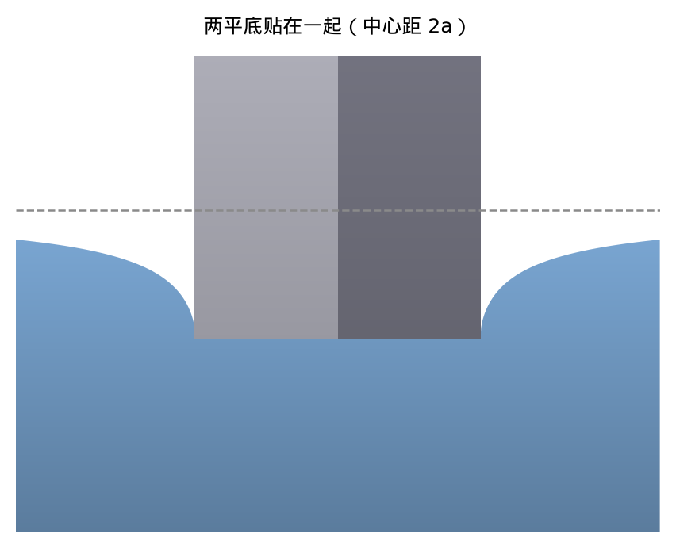
这张图展示了下面那张能量曲线最左端的构型：同样两个平底（半径 a = 0.1）靠拢到中心距 2a、刚好贴在一起，同时压进块 0.006，图是沿两个平底中心连线竖直剖开的截面，竖直方向放大了 30 倍。浅灰和深灰两个矩形是左右两个平底的剖面，蓝色是块的剖面，灰色虚线是块原来的表面；两个平底底面下的平坑已经连成一整片，外侧块面向坑边逐渐下沉。按两个分开的接触区计算已经不合适，要切成一个接触区，下面那张能量曲线上的跳变就发生在这一步。
 这张图展示了两个接触区靠拢到贴在一起时，从「两区加耦合」切成「一区」的那一下，能量会跳 4% 到 7%。横轴是两平底中心距除以半径，从右往左是靠拢，到 2 时两个平底刚好贴上；纵轴是各写法的能量除以边界元，灰色虚线是边界元本身。蓝线是两区写法、耦合项按点力算，绿线是耦合项按平底的分布压力算，两条线一路都贴着 1，误差在 2% 以内；红点是贴合后改用一区写法（把两块合成一个等面积的圆）得到的能量，只有边界元的 0.938。两个箭头标出切换时的落差，蓝线跳 6.8%，绿线跳 4.2%。
这张图展示了两个接触区靠拢到贴在一起时，从「两区加耦合」切成「一区」的那一下，能量会跳 4% 到 7%。横轴是两平底中心距除以半径，从右往左是靠拢，到 2 时两个平底刚好贴上；纵轴是各写法的能量除以边界元，灰色虚线是边界元本身。蓝线是两区写法、耦合项按点力算，绿线是耦合项按平底的分布压力算，两条线一路都贴着 1，误差在 2% 以内；红点是贴合后改用一区写法（把两块合成一个等面积的圆）得到的能量，只有边界元的 0.938。两个箭头标出切换时的落差，蓝线跳 6.8%，绿线跳 4.2%。
10-21 至 10-22 的进展
刚球压平块的标签做完了
8 条刚球压平块标签全部算完。网格外推按 3.4 节的办法，这一组共用的收敛阶是 \(p\approx2.0\)（各压深在 1.94 到 2.09 之间）。对光滑的球，网格每细一半误差缩成四分之一，这是正常情况。外推后标签 ÷ Hertz 在 0.997 到 1.011 之间。
半径从 \(R=1\) 换成 \(R=2\)，按 2.3 节 \(U_H\propto\sqrt R\)，同一压深下能量应该变成 \(\sqrt2\) 倍。标签给出 1.4148 到 1.4184，与 \(\sqrt2=1.4142\) 的差不超过 0.3%。
这段视频展示了刚球压平块时，压得越深，球和块接触的那一片越大。这是 3.4 节那张标签表（\(\hat d\) = 0.000125）对应的那次仿真，用同样的设置重跑了一遍、每帧录了下来，每个压深的弹性能和标签逐值一致。左边是过接触中心的剖面，灰色是半径 1 的刚球，蓝色是软块（杨氏模量 1e5），竖直方向放大 4 倍，球和块之间描红的是剖面上受力的块节点连成的段；右边是从正上方看块的顶面，灰点是块表面的网格点，粉色是红点围出的接触区。红色是 IPC 实际施加了接触力的块节点：压头的点落在块的某个三角形上时，力按位置分到这个三角形的三个角；两条棱靠近时，力分到块那条棱的两端。所以红色区域比真正贴住的地方大一圈，大约一个网格单元，网格越粗这圈越宽。球固定不动，块被一组向上的力推着依次压到六个深度，每停稳一次画面停一秒，小字给出这时的压深和弹性能，从第 4 秒的 0.0038 和 0.058 到第 26 秒的 0.0232 和 5.06。对比每一段停住的画面可以看出，左边的红段和右边的接触区一起变大，最深一档整面受力节点 516 个、剖面上 25 个，压深涨了 6 倍，弹性能涨了约 87 倍。
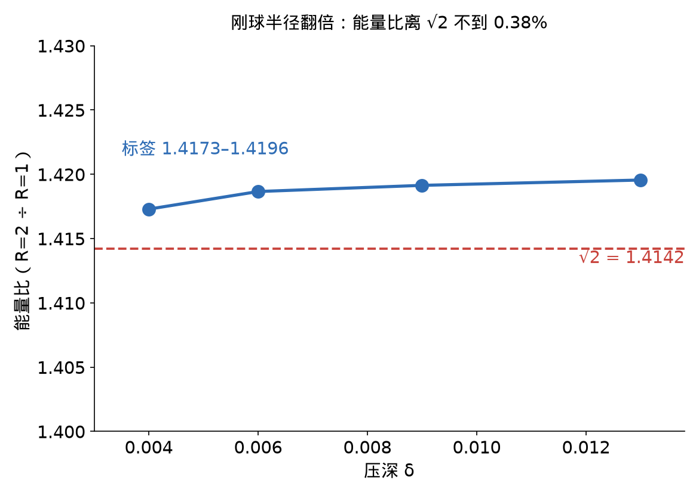
这张图展示了刚球半径翻倍后，能量比和 √2 相差不到 0.3%。刚球半径 1 和 2 分别压同一种软块（E = 1e5、ν = 0.3），蓝线是四个压深上「R=2 ÷ R=1」的标签能量比，红色虚线是 Hertz 给出的 √2 = 1.4142；蓝线略高于红线，从 1.4148 到 1.4184，压深越大越高，所以单看这个比值，刚球标签符合理论。
钉点那件事也收尾了：对钉点最敏感的 3 个软–软构型，把钉点刚度从 \(10^2\) 加到 \(3\times10^2\) 重算，3.3 节验收里的截距只变了不到 0.01 个百分点。钉点不影响验收结论。
全部 58 个数据点的试训：最大误差没过线，原因找到了
第 6 节那次试训只用了软–软的 20 个点。这次把刚球压平块和曲面块也加进来，一共 16 个构型、58 个数据点，仍然用留一法：每次拿掉一个构型的全部数据，用剩下的训练，再预测拿掉的那个。
结果中位数 0.26%，过了；最大误差 1.6% 到 1.9%，没过 1%。超标的几乎全是 T1b：刚球压在环面块的内圈，像压在甜甜圈内侧。那里沿管子方向是凸的，沿内圈方向是凹的，两个方向弯曲程度差 3 倍，接触区是一个很扁的椭圆。
用「扁度」衡量椭圆有多扁，定义为两个方向等效曲率之比的对数：
\[\text{扁度}=\ln\frac{\kappa_1}{\kappa_2},\]
\(\kappa_1,\kappa_2\) 是接触处两个主方向上合起来的曲率（曲率 = 1/半径，越弯越大）。圆形接触扁度为 0，T1b 是 \(\ln3=1.10\)，其余 9 个曲面构型都在 0 到 0.51 之间。
 这张图是曲面块这组实验里最简单的一个：半径 1 的灰色刚球压在表面平整的蓝色软块上，画的是压到最深一档停稳后的样子。左幅是过接触中心的竖直剖面，竖直方向放大了 5 倍，否则块面的起伏和球陷进去的深度都薄得看不出，球和块之间描红的一段是剖面上受力的块节点；右幅是从正上方看块的顶面，灰点是块面上的网格点，粉色是红点围起来的接触区，右幅的横向就是左幅剖面的方向。红色是 IPC 实际施加了接触力的块节点：压头的点落在块的某个三角形上时，力按位置分到这个三角形的三个角；两条棱靠近时，力分到块那条棱的两端。所以红色区域比真正贴住的地方大一圈，大约一个网格单元，网格越粗这圈越宽。这一张最深一档整面受力节点 86 个。后面几张曲面块用同样的画法。块面两个方向都不弯，接触区是圆，后面几张都拿它作对照；网格点距约 0.025，所以接触区的长短轴只能量到这个精度。
这张图是曲面块这组实验里最简单的一个：半径 1 的灰色刚球压在表面平整的蓝色软块上，画的是压到最深一档停稳后的样子。左幅是过接触中心的竖直剖面，竖直方向放大了 5 倍，否则块面的起伏和球陷进去的深度都薄得看不出，球和块之间描红的一段是剖面上受力的块节点；右幅是从正上方看块的顶面，灰点是块面上的网格点，粉色是红点围起来的接触区，右幅的横向就是左幅剖面的方向。红色是 IPC 实际施加了接触力的块节点：压头的点落在块的某个三角形上时，力按位置分到这个三角形的三个角；两条棱靠近时，力分到块那条棱的两端。所以红色区域比真正贴住的地方大一圈，大约一个网格单元，网格越粗这圈越宽。这一张最深一档整面受力节点 86 个。后面几张曲面块用同样的画法。块面两个方向都不弯，接触区是圆，后面几张都拿它作对照；网格点距约 0.025，所以接触区的长短轴只能量到这个精度。
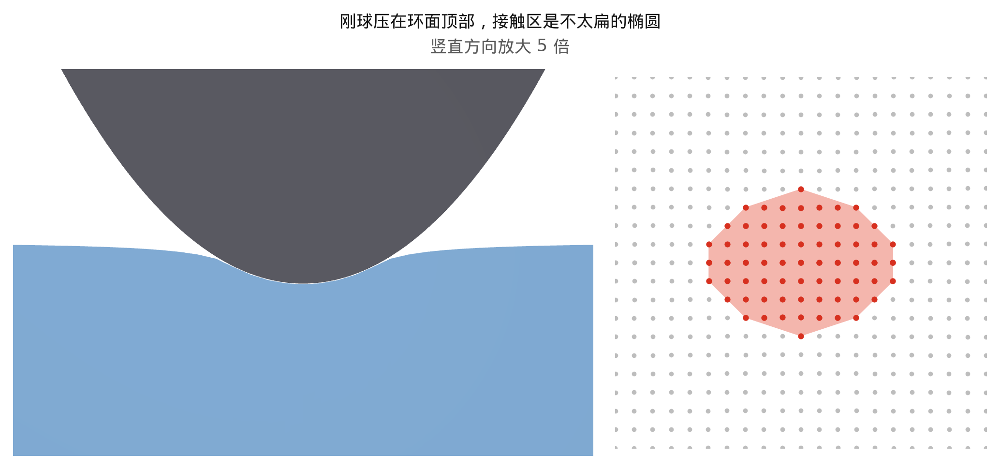
这张图里的块面取自环面（甜甜圈）的顶部：沿管子方向往外凸，弯曲半径是管半径 2；沿大圆方向在顶部是平的。灰色刚球压在正中，球和块合起来两个方向的弯曲程度不一样，接触区是一个不太扁的椭圆：左幅剖面沿大圆方向切，块面是平的；右幅里接触区沿这个不弯的方向（横向）更长，长短轴之比量出来约 1.26，椭圆 Hertz 公式算的是 1.31；整面受力节点 75 个。
 这张图里的块面取自环面的内圈，也就是甜甜圈中间那个洞的内壁：沿管子方向往外凸，沿内圈方向往里凹，像一个马鞍。灰色刚球压在正中，球和块合起来两个方向的弯曲程度差 3 倍，所以这是十个曲面构型里接触区最扁的一个（扁度 ln 3 = 1.10），8.2 节网络误差超标的点几乎都出在这里。左幅剖面沿内圈方向切，看得到块面两边翘起来托住球；右幅里接触区顺着这个往里凹的方向（横向）拉得很长，长短轴之比约 2.3，椭圆 Hertz 公式算的是 2.07；整面受力节点 89 个。
这张图里的块面取自环面的内圈，也就是甜甜圈中间那个洞的内壁：沿管子方向往外凸，沿内圈方向往里凹，像一个马鞍。灰色刚球压在正中，球和块合起来两个方向的弯曲程度差 3 倍，所以这是十个曲面构型里接触区最扁的一个（扁度 ln 3 = 1.10），8.2 节网络误差超标的点几乎都出在这里。左幅剖面沿内圈方向切，看得到块面两边翘起来托住球；右幅里接触区顺着这个往里凹的方向（横向）拉得很长，长短轴之比约 2.3，椭圆 Hertz 公式算的是 2.07；整面受力节点 89 个。
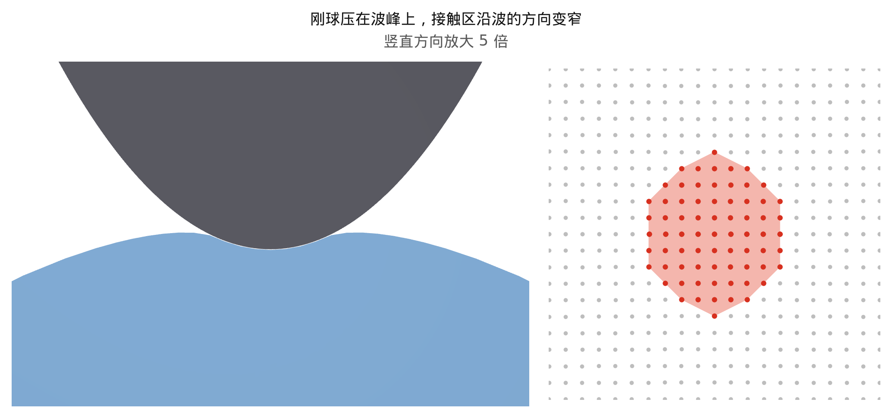
这张图里的块面是一道波浪的波峰：沿波传播的方向往外凸，垂直于它的方向是直的。灰色刚球压在波峰正中。左幅剖面沿波传播的方向切，看得到波峰的拱；右幅里接触区在这个方向（横向）变窄、纵向更长，长短轴之比约 1.25，椭圆 Hertz 公式算的是 1.16；整面受力节点 80 个。
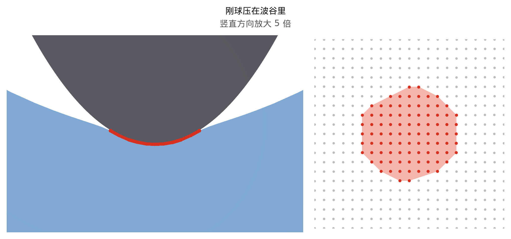
这张图里的块面是同一道波浪的波谷：沿波传播的方向往里凹，垂直于它的方向是直的。灰色刚球压在波谷正中，和上一张波峰比，只是块面弯的方向反过来。按椭圆 Hertz 公式，接触区沿波的方向（横向）应该长一些，长短轴之比 1.21，也就是长轴只比短轴多约 0.02，不到一个网格点距（0.025）；右幅量出来两个方向一样宽（比值 1.00），这套粗网格分辨不出这点差别，所以这张图上看不出拉长。整面受力节点 90 个。
这段视频展示了造标签的过程：把软块推向刚球，等它停稳，记下这时块里存的弹性能。画面是过接触中心的剖面，灰色是半径 1 的刚球，蓝色是表面取自环面内圈的软块，竖直方向放大了 5 倍才看得清贴合的变化；球和块之间描红的一段，是剖面上 IPC 实际施加了接触力的块节点（球网格的点落在块的三角形上时，力分到这个三角形的三个角，所以红段比真正贴住的地方长出约一个网格单元），它随压深变长，最深一档剖面上有 15 个。球固定不动，块上每一点都受一个向上的力，被推着依次压到三个深度；每停稳一次画面停一秒，上方小字给出这时的压深和弹性能，第 5 秒是 0.0050 和 0.142，第 10 秒是 0.0077 和 0.392，第 16 秒是 0.0103 和 0.798，这三组数是这个构型的三行原始读数。
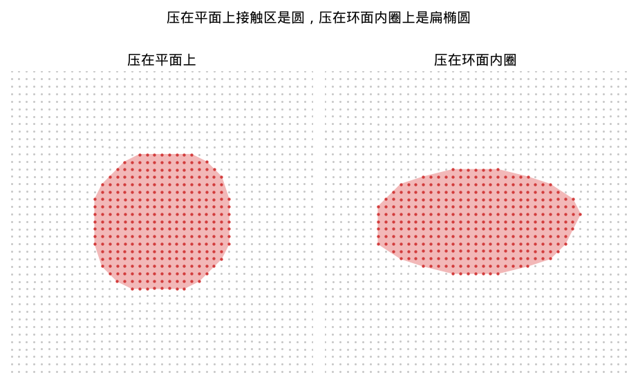
这张图从正上方看刚球压进软块以后，块表面哪些地方贴住了球。两边是同一个半径为 1 的刚球、同样软的块、同样大小的压力，灰点是块表面的网格点，红点是 IPC 实际施加了接触力的那些（球网格的点落在块的三角形上时，力分到三角形的三个角；两条棱靠近时，分到块那条棱的两端，所以红色比真正贴住的地方大约一个网格单元），粉色是红点围出的接触区。左边的块面是平的，接触区是圆；右边的块面取自环面的内圈，沿管子方向往外凸、沿内圈方向往里凹，和球合起来两个方向的弯曲程度差 3 倍，接触区被拉成扁椭圆，长轴约是短轴的 2.0 倍（椭圆 Hertz 公式算的是 2.07）；两边整面受力节点分别是 301 和 319 个。网络原来的骨架把每个接触区都当圆来算，在右边这种情况下差 2.5%，所以 8.2 节把骨架换成了椭圆 Hertz。
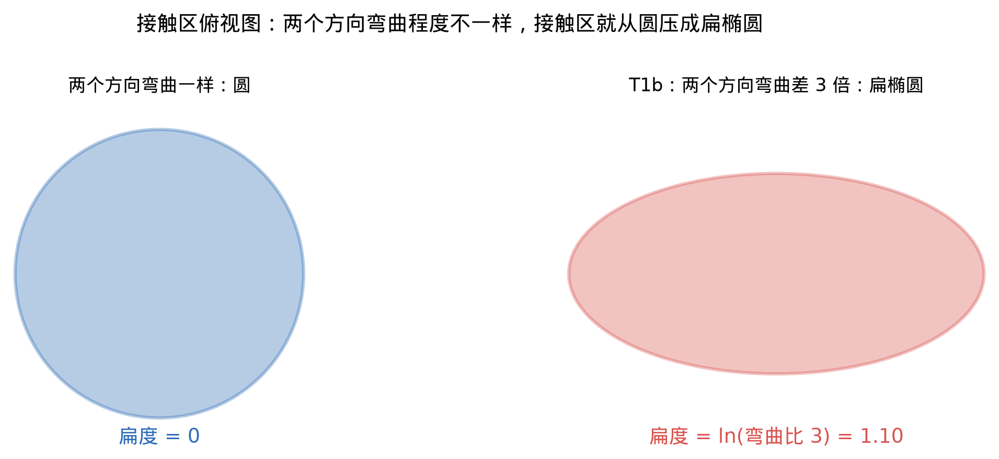
这张图展示了两个方向弯曲程度不同时接触区的形状，两幅都是从上往下看接触区。扁度定义为两个方向弯曲程度之比取对数。通过对比左边蓝色的圆形接触区（两个方向弯曲一样，扁度 0）和右边红色的 T1b 椭圆接触区（两个方向弯曲差 3 倍，扁度 ln3 = 1.10），可以看出 T1b 的接触区一个方向长、一个方向短，所以当成圆来算会有偏差。
起初以为是数据不够：把 T1b 拿掉以后，网络只见过扁度 0.51 以下的情况，要它预测 1.10，等于往训练范围外延伸一倍多。但再查骨架，发现主因在骨架本身。5.1 节的骨架对不对称的缝隙取的是周向平均，等于把椭圆接触当成圆来算。椭圆接触其实有精确的解析解（椭圆 Hertz），两者之比在 T1b 上是 2.5%。也就是说，网络要补的 2.7% 里，2.5 个百分点是骨架自己造成的，标签本身相对椭圆 Hertz 只偏 0.24% 到 0.51%。
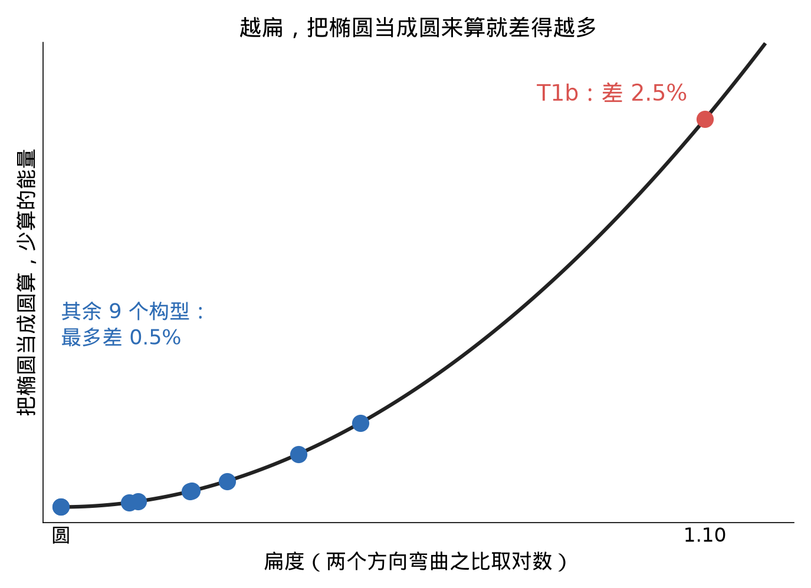
这张图展示了把椭圆接触当成圆来算会少算多少能量。横轴是扁度（最左端是圆，扁度 0），纵轴是当成圆算时少算的能量，黑色曲线是椭圆 Hertz 公式给出的少算量，点是我们的曲面构型。通过对比曲线左下端的九个蓝点（其余 9 个曲面构型，最多差 0.5%；其中有两处各是两个扁度相同或几乎相同的构型，点叠在一起，所以只看得到 7 个）和右上方的红点 T1b（扁度 1.10，差 2.5%），可以看出接触区越扁少算得越多，而且增长越来越快，所以 T1b 那 2.7% 的误差里有 2.5 个百分点来自骨架，换成椭圆 Hertz 骨架就能去掉。
于是把骨架换成椭圆 Hertz：接触区是椭圆时，主体能量直接用椭圆 Hertz 的精确式，网络只补剩下的有限尺寸和有限变形。这和整个设计的原则一致：公式能算的交给公式，网络只学剩下的。
换完以后：
|
换骨架前 |
换骨架后 |
| 误差中位数 |
0.26% |
0.19% |
| 最大误差 |
1.6%–1.9% |
1.04% |
| T1b 的误差 |
−1.86% |
+0.16% |
最大误差只差 0.04 个百分点就过线。换三个不同的随机种子重训，结果相差不超过 0.04 个百分点，说明改善是真的，不是运气。
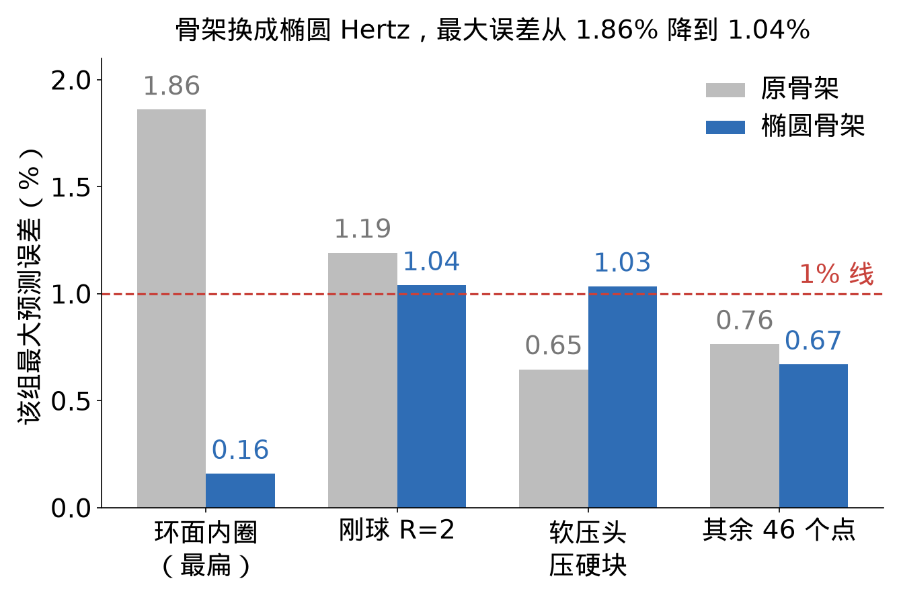
这张图展示了把骨架换成椭圆 Hertz 后，最大预测误差从 1.86% 降到 1.04%。每个点的预测误差是把它所在的构型从训练里拿掉、再让网络预测得到的，柱高是一组点里最大的误差，灰柱是原骨架，蓝柱是椭圆骨架。最扁的环面内圈从 1.86% 降到 0.16%，其余 46 个点从 0.76% 降到 0.67%；刚球 R=2 从 1.19% 只降到 1.04%，软压头压硬块从 0.65% 升到 1.03%，这两组还在红色 1% 线上方。
判据怎么处理
「最大误差 ≤ 1%」是事先定的，结果出来以后不改，照实报告没过以及原因。另外加报一项插值考核：只看被拿掉的构型落在其余构型覆盖范围之内的那些点，考的是「两边都见过、中间没见过」时网络准不准。这一项是在补新数据之前定下并提交的。T1b 是最扁的，拿掉它时永远是外推，单独列出。
换骨架后的插值考核：48 个插值点，中位数 0.16%，过；最大 1.04%，不过。
为了让插值考核有意义，补了两个扁度介于中间的环面构型：环面中心圆半径从 4 改成 6 和 4.5，扁度分别为 \(\ln2=0.69\) 和 \(\ln2.5=0.92\)。补完再训（64 个数据点，椭圆骨架）：曲面块整组最大误差 0.44%，两个新构型被拿掉时只差 0.07% 以内；全部数据中位数 0.15%，最大 1.11%，插值考核最大 1.04%，超线的只剩软压头压硬块那组和 \(R=2\) 刚球的一个点。
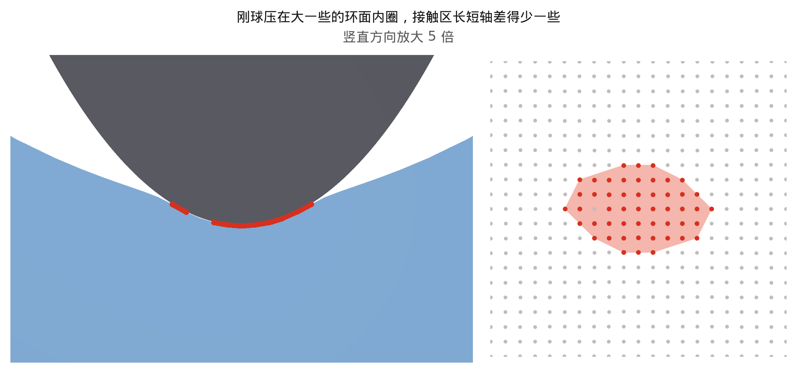
这张图是为插值考核补的第一个环面内圈构型：环面的中心圆半径从 4 加大到 6，管半径仍是 2，所以块面沿内圈方向凹得比原来的环面内圈浅。灰色刚球压在正中，球和块合起来两个方向的弯曲程度差 2 倍（扁度 ln 2 = 0.69），正好落在原来最扁的 1.10 和其余构型的 0.51 之间。右幅里接触区沿内圈方向（横向）拉长，长短轴之比约 1.51，椭圆 Hertz 公式算的是 1.59；整面受力节点 83 个。
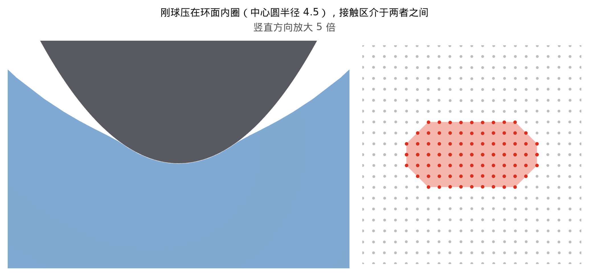
这张图是补的第二个环面内圈构型：中心圆半径 4.5，管半径 2，块面沿内圈方向的凹比上一张深、比原来的环面内圈浅。灰色刚球压在正中，两个方向的弯曲程度差 2.5 倍（扁度 ln 2.5 = 0.92），和上一张一起把 0.51 到 1.10 之间补上了两个点。右幅里接触区的长短轴之比量出来也是 1.51，和上一张一样（网格点距 0.025 分辨不出），椭圆 Hertz 公式算的是 1.84；整面受力节点 87 个。
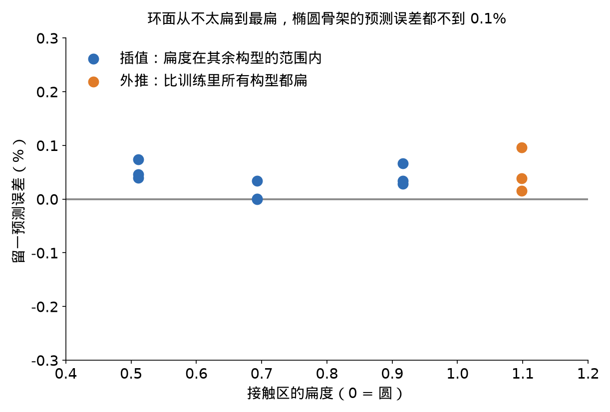
这张图展示了补上两个中间扁度的环面后，在椭圆骨架下，环面一族从扁度 0.51 到最扁的 1.10，留一预测误差都不到 0.1%。横轴是接触区的扁度，0 表示圆；蓝点的扁度落在其余构型的范围内，属于插值，橙点是最扁的环面内圈，比训练里所有构型都扁，属于外推。蓝点和橙点都贴着零线，最大 0.096%，因为接触区变扁带来的能量变化已由椭圆 Hertz 公式算出，网络只需补很小的修正。
新发现：两个半径的标签不满足相似律
现在最大误差的那个点是 \(R=2\) 的刚球。查它的时候发现一个标签本身的问题。
Hertz 能量可以改写成
\[\frac{U_H}{E^*R^3}=\frac{8}{15}\Big(\frac{\delta}{R}\Big)^{5/2}.\]
左边是用 \(E^*\) 和 \(R\) 去掉单位后的能量，右边只依赖 \(\delta/R\)。这叫相似律：把整个问题等比例放大，只要 \(\delta/R\) 相同，去掉单位后的结果就相同。有限变形带来的偏差也只依赖 \(\delta/R\)，所以 \(R=1\) 和 \(R=2\) 的标签在相同 \(\delta/R\) 下，「标签 ÷ Hertz」应该完全一样。
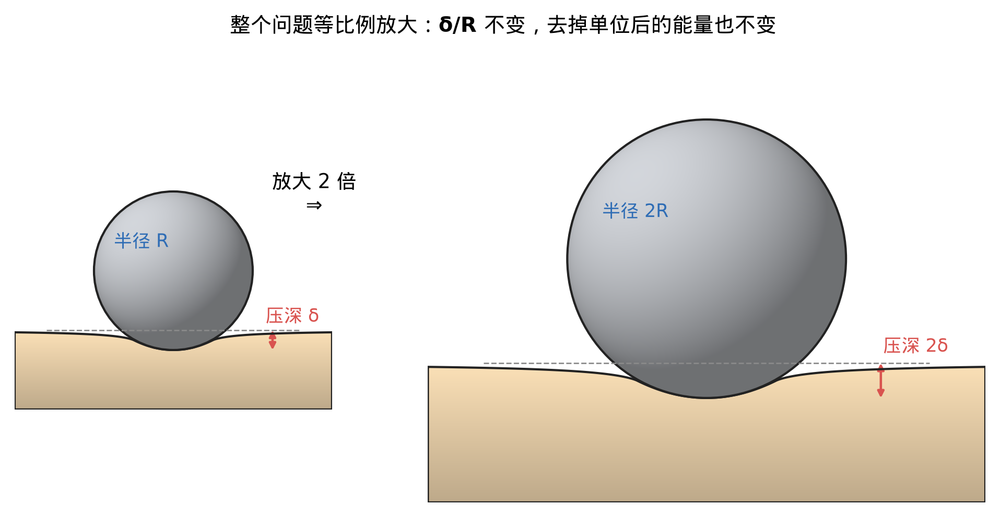
这张图展示了相似律。左边是半径 R 的灰球压进橙色块，红色箭头是压深 δ，灰色虚线是块原来的表面；右边是把整个问题放大两倍，球半径变成 2R，压深变成 2δ。通过对比左右两块上的凹陷，可以看出它们只是同比例放大，所以只要压深与半径之比 δ/R 相同，去掉单位后的能量就相同。如果 R = 1 和 R = 2 的「标签 ÷ Hertz」对不上，说明标签里还有别的误差。
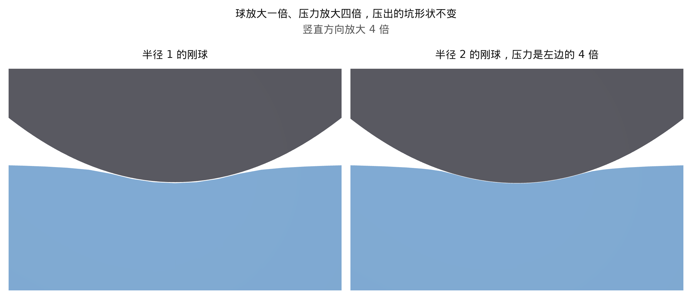
这张图展示了把刚球放大一倍、压力按相似律放大四倍以后，压出来的坑形状不变，只是整体大了一倍。左边是半径 1 的灰色刚球压在蓝色软平块上，右边是半径 2 的刚球压在同样的软块上，右边的压力是左边的 4 倍，右图取景框也放大了一倍，两边竖直方向都放大 4 倍。两张图里球和块贴合的样子一样，右边的弹性能是左边的 7.98 倍，接近相似律给出的 2³ = 8 倍（这是未外推的单次读数），所以同一个「压深 ÷ 半径」下，两个半径的「标签 ÷ Hertz」应该相等。
实际在 \(\delta/R=0.0065\) 处，\(R=2\) 是 1.0108，\(R=1\) 约 1.003，差了 0.75%。8.1 节里 \(\sqrt2\) 那个比值之所以对得上，是因为两个误差恰好部分抵消。查出两个原因：
 这张图展示了两个半径的标签不满足相似律，同一 δ/R 下 R=2 比 R=1 高 0.745%。两条线是半径 1 和 2 的刚球压同一种软块（E = 1e5、ν = 0.3）的「标签 ÷ Hertz」，横轴是压深除以半径，按相似律蓝线（R=1）和橙线（R=2）应该重合，但橙线整体在蓝线上方，红色箭头标出 δ/R = 0.006 处的差。8.1 节那张图里能量比能对上 √2，是因为两个半径的误差部分抵消了。
这张图展示了两个半径的标签不满足相似律，同一 δ/R 下 R=2 比 R=1 高 0.745%。两条线是半径 1 和 2 的刚球压同一种软块（E = 1e5、ν = 0.3）的「标签 ÷ Hertz」，横轴是压深除以半径，按相似律蓝线（R=1）和橙线（R=2）应该重合，但橙线整体在蓝线上方，红色箭头标出 δ/R = 0.006 处的差。8.1 节那张图里能量比能对上 √2，是因为两个半径的误差部分抵消了。
- 球面的离散没有外推。 球冠表面是用三角形拼出来的，拼得越细越接近真球面。3.4 节外推的是块的网格，球面本身的细分档没有外推。两个半径用的细分档不同，\(R=1\) 因此偏低约 0.11% 到 0.39%，\(R=2\) 偏低约 0.05% 到 0.16%（压深越大偏得越少）。
- 压深的定义漏了间隙。 IPC 为了保证不穿透，会让两个表面之间始终保持一层极薄的间隙（不超过 \(\hat d\)），标签最后要把它外推到 \(\hat d\to0\)。算「标签 ÷ Hertz」时，分母里用的压深没有把这层间隙加进去，导致这个比值随 \(\hat d\) 的变化不是直线，按直线外推就有偏差。
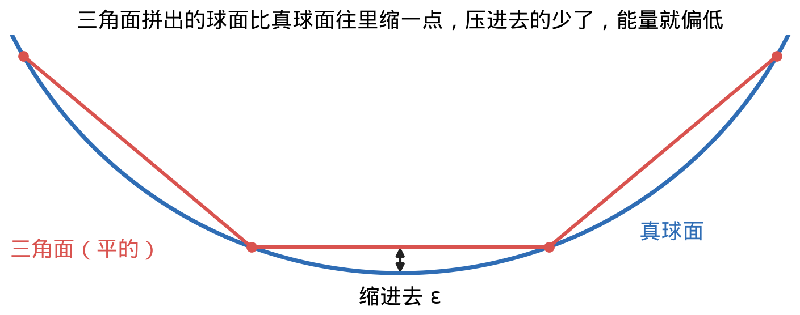
这张图展示了三角面拼出的球为什么让能量偏低。蓝色弧线是真球面，红色折线是用平的三角面拼出来的球面，红点是三角面的顶点，都落在真球面上。通过对比蓝色弧线和红色折线，以及最下面那块平面中点到弧线之间标着「缩进去 ε」的小箭头，可以看出每块平面都比真球面往里缩了一点，压头实际压进去的量变少，所以算出的能量偏低。三角面拼得越粗，ε 越大，能量偏得越多。
 这张图展示了只换球面三角形的细分档，标签就变 0.07% 到 0.5%。球面由三角形拼成，三角形越细越接近真球面；蓝线是 R=1 把三角形加细，标签升高 0.07% 到 0.25%，红线是 R=2 把三角形变粗，标签降低 0.16% 到 0.50%，灰色横线是不变，两条线都是压深越浅离它越远。两个半径用的细分档不同，所以这一项直接进了上面那张相似律图里的差。图里是两档细分互换后实测的变化；正文的 R=1 偏低 0.11%–0.39%、R=2 偏低 0.05%–0.16%，是由这组实测推算的各自细分档相对真球面的偏低量，不是同一个量。
这张图展示了只换球面三角形的细分档，标签就变 0.07% 到 0.5%。球面由三角形拼成，三角形越细越接近真球面；蓝线是 R=1 把三角形加细，标签升高 0.07% 到 0.25%，红线是 R=2 把三角形变粗，标签降低 0.16% 到 0.50%，灰色横线是不变，两条线都是压深越浅离它越远。两个半径用的细分档不同，所以这一项直接进了上面那张相似律图里的差。图里是两档细分互换后实测的变化；正文的 R=1 偏低 0.11%–0.39%、R=2 偏低 0.05%–0.16%，是由这组实测推算的各自细分档相对真球面的偏低量，不是同一个量。
两项都修正后，两个半径的差从 0.97% / 0.75% 降到 0.12% / 0.44%（\(\delta/R=0.004\) / 0.006），还剩约 0.4% 没解释。球面这一项是用诊断运行实测的量重算的，细网格上的球面效应还在测。
 这张图展示了修掉球面离散和间隙两项后，两个半径之间的差明显变小。灰柱是标签原样时 R=2 比 R=1 高出的量，δ/R = 0.004 和 0.006 处分别是 0.971% 和 0.745%；蓝柱是两项都修正后的结果，降到 0.116% 和 0.437%。所以 0.004 处的差基本解释完，0.006 处还剩约 0.4% 没有解释。
这张图展示了修掉球面离散和间隙两项后，两个半径之间的差明显变小。灰柱是标签原样时 R=2 比 R=1 高出的量，δ/R = 0.004 和 0.006 处分别是 0.971% 和 0.745%；蓝柱是两项都修正后的结果，降到 0.116% 和 0.437%。所以 0.004 处的差基本解释完，0.006 处还剩约 0.4% 没有解释。
现在在跑和等你定的
已跑完：两个新环面构型（扁度 0.69、0.92）的三档网格，插值考核已重算（见 8.3 节）；球面细分的对照实验（两个半径的细分档互换），实测球面效应约为几何估计的一半。正在跑：细网格那一档的球面细分对照，约 2 小时。
等你定：球面细分误差怎么处理，是对细分档也做外推，还是统一用足够细的档；压深定义要不要把间隙算进去。还有一件要查：换成椭圆骨架后，软压头压硬块那组的最大误差从 0.65% 变成 1.03%，原因还不清楚。
另外还挂着两件：斜压最浅一档（压深 0.003）的标签要不要再加细一档网格；网络训好以后要不要用符号回归把修正项写成公式。
已经定下的：软压头标签的验收判据见 3.3 节；换位置评测等网络训好后统一测，裁判优先曲面 Hertz；网络输入缝隙形状，骨架的幂次由它决定，能量和力一起训练，只要求对压深单调且越压越硬，不做截断；和 Romero et al. 2023 对比时，作用半径取结构误差不超过 1% 的最小倍数，能量取「粗形状 + 预测位移」的弹性能减去粗形状的弹性能，仿射粗态用体积平均变形梯度，同自由度和原文设定两组都报。
后续对比的候选
能在压入测试上和我们比能量的神经方法，只有 Romero et al. 的三篇（2021、2022、2023）。它们学的是接触造成的位移修正，要比能量，得补上造数据、可微的弹性能和网络；2023 那篇有训练代码。RigidFormer 只处理刚体、不输出力或能量，ContactNets 是硬接触、给定压深时力没有定义，两者都不参加压入对比。仿射体动力学（ABD）和我们用同一套粗自由度、只是不补接触能量，是最干净的消融对照；全自由度的 IPC 作测速的分母。